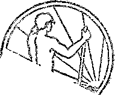

A JOURNAL OF FACT HOPE AND. COURAGE
MOUNTAINS!
AND MOUNTAIN CLIMBING
ANOTHER FOOD POISONING
LIFE OF A TRACKMAN
ANOTHER COMMUNITY CHEST
WAR RESISTANCE
UNDERSTANDING PROPHECY Full text of an address by Judge Rutherford, broadcast in vcatchtowee national chain program
every other WEDNESDAY five cents a copy one dollar a year Canada & Foreign 1.25
Vol. XII - No. 294 December 24, 1930
LABOR AND ECONOMICS
The Life of a Trackman . . . 213
Five-Day Week in Czechoslovakia 240
Government Control of Industry 205
No Canadian Harvest Call , . 205
Alameda’s Municipal Electric Plant........ 206
Farms for Britain's Unemployed 206
POLITICAL—DOMESTIC AND FOREIGN
Germany Tired of Reparations . 205
Break-up of British Empire . . 206
Prison Reform in Germany . .209
The World’s Outlook .... 210
SOCIAL AND. EDUCATION AL
Olla-podrida...... . 204
Ullstein Publishing Company . 205
Among the Osages . > 206
The Telephone War in Cuba <, . 207
Philadelphia Memorial Park . . 207
War Resistance in the Offing . 212
A Study in Nines ...... 212
Another Ohio Community Chest 214
No Testimonials Printed . . 9 216
MANUFACTURING AND MINING
The Power Trust in New York
State ......... 208
FINANCE—COMMERCE—TRANSPORTATION
Why Dominies Should Have
Free Passes ...... 203
Russian Soap in Cardiff . . . 204
What the Power Trust Costs . . 206
Business Conditions in Detroit in
August ........ 208
Safety of Automobile
Transportation ..... 211
SCIENCE AND INVENTION
Diesel Engines for Motor Cars . 204
Sensitiveness of Receiving Sets 204
Photography Through Steel . , 206
Effect of Smoke on a Drouth . 209
HOME AND HEALTH
How Many Psychiatrists Have We? ”, / . . . . . . .206
Are the Doctors Rkally So
Dumb? ........ 210
Homemade Whole Wheat Bread 212
Disemboweling Dogs in Canada 215
Practical Case of Grape Cure , 216
TRAVEL AND MISCELLANY
Mountains and Mountain
Climbing . . . , Modern Roads of Korea
Japan’s Aviation Expanding
RELIGION AND PHILOSOPHY
A Preacher in Skirts Understanding Prophecy Respecting Tithes . .
195
204
204
207
Pv.blislied every other Wednesday at 117 Adams Street, Brooklyn, N. Y., U. 3. A., by WOODWORTH, KNORR & MARTIN
Copartners and Proprietors Address; J.17 Adams Street, Brooklyn, N, I7., U. S. A. CLAYTON J. WOODWORTH .. Editor ROBERT J. MARTIN ,. Business Manage?
. KATHAN H. KNORR .» Secretary and Treasurer
Fivn Cents a Copy—$1.00 a Yeah Maks Remittances to TUB G-OLDBN AGB jyoUce to Subscribers: For your own safety, remit by postal or express money order,; We do not. as a rule, send acknowledgment of a renewal or a new subscription. Renewal blank (carrying notice of expiration) is sent with the Journal one month before the subscription expires. Change of address, when reguested, may be expected to appear on address label within one month.
Translations published in Finnish, Garman, Norwegian, Polish, and Swedish, Offices in Other Countries •
British a 6 o 34 Craven Terrace, London, W. 2, England
Canadian........... 40 Irwin Avenue, Toronto 5, Ontario, Canada
Australasia,; ....... 7 Beresford Rd., Strathfield, N. S. W.,- Australia South Africa ............ 6 Leite Street, Cape Town, South Africa
Entered as second-class marter at Brooklyn, N. Y.» under the Act. of March 3, 181^
Volume XII
Brooklyns FL Y.g Wednesday,, December 24.. 1930
Num beg' 294
THE principal mountains of the world extend in an almost unbroken chain from Patagonia to the Cape of Good Hope, embracing in order the Andes, the Rocky mountains, the great central chain through the Himalayas and Alps to the western coast of Europe, and thence across the Sahara and down the central part of Africa to the bold escarpment at Cape Town.
There are various kinds of mountains, described as “folded”, “fault,” “volcanic” and “'residual”. Folded mountains are huge compressions of the earth’s surface, and these account for all the great mountain systems. They have been principally due to the contraction of the crust of the earth as a result of the gradual cooling -which took place thousands of years ago.
Sometimes great breaks occur in the earth’s crust, one side of a fracture dropping hundreds of feet, and leaving the elevated block as a mountain. Many of the ranges of western Utah and Nevada are of this origin. These are the “'fault” mountains.
Volcanic mountains are usually great single piles of lava and ash, of which Mounts Shasta and Hood are excellent examples. The recently formed cones are often beautifully symmetrical, but as soon as activity ceases the cones become gashed with valleys.
When great plains are lifted up and become plateaus, and subsequently become worn down until they are mountainous in topography, what are left are said to be “residual” mountains. The mountains of the Alleghany plateau are of this type.
Frost, wind and water are continually changing the mountains. If given sufficient time, erosion will reduce high mountains to featureless plains. There are many high mountains in the beds of the oceans. A number of submerged peaks have been located and their elevations determined.
If a mountain extends to considerable length it is called a range or chain; if short, a ridge. A group of ridges or ranges is a mountain system, and several combined systems constitute a cordillera. A level-topped mountain of considerable area is a plateau. A mesa is a large section of a plateau; a butte is a small one. The parts of a mountain are summit, base, slope, crest, pinnacle, needle and knob.
The mineral wealth of the world is found chiefly in the mountains. The dimate is profoundly affected by them, on account of their decided influence on the rainfall. They constitute earth’s great water-reservoirs. Lakes and springs are common in. them. Their natural boundaries have served to protect, the weak from the strong and have thus markedly affected human history.
Unless hunting or other business takes them there the natives who live in the neighborhood of great mountain peaks never climb them. The art of climbing these difficult peaks has been developed by others, but as it has become more widely practiced thousands of Swiss, Italians and Tyrolese have taken up the work as professional guides, and because they are at it constantly their skill exceeds that of the enthusiasts who climb under their direction.
Though hundreds of visitors and guides have lost their lives in mountain climbing, accidents rarely occur nowadays when guides are employed and reasonable precautions are taken. Climbing offers no rewards except that of achievement.
Strong limbs, a sound heart and good lungs are essential to become a mountain climber, but even the frail have latent powers in this direction which are often far in excess of what they imagine. Most people fail in achievement of any kind because they do not make the effort.
There are various kinds of mountain climbers.
Some are merely club mountaineers, others are trail riders, others are nature lovers, and others are just plain hikers. America has not many real mountain climbers outside of regularly organized clubs, such as the American Alpine Club of New York, the Mountain Club of Denver, the Sierra Club of San Francisco, etc. American climbers have a peculiarity of spurning the aid of guides in finding their way up precarious mountain sides. -
Mountain climbing as a sport is only about seventy-five years old. Once engaged in, it seems to hold its devotees. The effort, endurance and skill required make it a sport for manly men. Oddly enough, most of the mountain climbers are city men, who just somehow feel the urge to seek nature in her most majestic phases and awe-inspiring moods.
Dangers of Mountaineering
There are eight main dangers in mountain climbing. Rocks, ice or snow may fall on the traveler, or he may fall from any one of them, or into a crevice in the ice, or he may be endangered by the weather. The disintegration of mountains above the snow line is constant, the rocks gradually falling to lower levels.
Rockcraft consists in the intelligent choice of a line of route, and in the activity and gymnastic skill necessary to follow the line chosen. In snowcraft the choice of a route is the result of a full understanding of the behavior of snow under a multitude of varying conditions, and depends largely upon experience rather than agility.
A skilled rock climber knows the kind of rocks to choose, and how much weight they will bear in the location in which they are at rest. He is expert in his choice of handholes and footholds and knows how to transfer his weight from one rock to another without jerking.
Climbers usually start with the first daylight. At that time the snow is generally good. A light sprinkling of snow overnight puts climbing out of the question, as it make the rocks so cold to the fingers. Only the easiest rocks can be climbed with fresh snow upon them.
Water for a mountaineering expedition is a vital question. Nothing knocks a man out more quickly than an intense thirst which cannot be slaked. Feeding a mountain climber is a real problem. Altitude impairs the power of the system to assimilate food, and the strongest constitution may be laid low by gastritis. A little alcohol is a great aid to digestion under mountaineering conditions. At heights of 20,000 feet jams, biscuits, chocolates, sugar and condensed milk are found excellent. Hot ruin is taken at night to promote sleep.
The Dreaded Avalanche
In the afternoon some mountainsides are death traps. The snow is soft and the stones which in the morning are firmly held by the frost are loosened by the sun and begin their flight to the valley. An avalanche is a dreadful spectacle to witness, either as it occurs or afterwards.
The sweep of an avalanche from the top of a mountain to the bottom may occur in as little as two and a half minutes. Forests are carried away and broken up into match sticks. Stones many feet in diameter go tearing through the air, bounding from crag to crag. The snow lands in the valley, covering it perhaps twenty-five feet deep.
Snow avalanches have their easily recognized routes, and can be avoided in times of danger by experienced mountaineers. In districts where avalanches are liable to occur the tourist loosely drags behind him a thin tape of red color, called avalanche tape. If an avalanche overtakes him and the snow’ covers him completely, this red tape will stick out of the snow and indicate to the rescue party where they must start their digging work.
Any number of things may start the movement of an avalanche: a falling tree, the vibration of a passing train, or the detonation of a gun. Sometimes a forest fire burns up the trees, the pegs that hold the snow in place. When spring comes the sun gradually melts it down until a rush carries stumps and all before it.
The best mountain climbers are those whose pulses at sea level beat below the normal and are thus able to work at high elevations without too great an increase in pulse beat above the normal. They must have a delicate sense of balance, be cool-headed, fearless, imperturbable, and have abundant muscular strength. Out of eight or ten men in a climbing party only two or three are fit to make the final attempt on the summit.
The terrific winds are demoralizing, and there are scenes of gaunt, disintegrating black cliffs that can be contemplated without horror only’ by a mind under rigid self-control. The power to keep onward when every muscle of the body says “Stop” is essential to success.
Mountain climbing is often a fight to save seconds. There is but an exceedingly limited time in which to do what must be done. It is now proven that oxygen apparatus is an unnecessary burden, as men have gone to 28,000 feet without it.
Acclimatization at high altitudes is considered essential to those who would conquer the highest peaks. An ascent of three thousand feet is considered a full day’s work. Goggles are needed to prevent snow blindness. Leather masks and face cream are needed to protect the face. There is a possibility of sunstroke. Clothing must be warm, but light.
As mountain climbers ascend they find water boils at a progressively lower temperature. At the summit of high mountains it is possible even to put one’s hand in the water while it is actually boiling. No matter how hot the fire may be at such heights, it is impossible to prepare a really hot drink.
Motoring ip the mountains is quite a different thing from motoring elsewhere. A big auto with a long wheel base is a menace to- life on steep and crooked mountain roads. Autos run differently in the rarefied atmosphere of the mountains than they do at lower elevations. The radiators boil like teakettles. Chains are a necessity, because the roads are often slippery. The condition of the brakes may mean life or death.
Horns, and good ones, are a necessity, because many autoists go temporarily deaf from sudden changes in the altitude. This deafness can be overcome by holding the nostrils shut with the fingers and then blowing hard. The more noise one makes with his horn, the safer he is.
The responsibility for collisions on a mountain road always rests with the driver who is coming down. On long hills a descending car may get out of control and can be kept in safety only by gently pulling the car against the wall and losing some paint from fenders and running board.
In some instances motorists have been known to save their brakes and the strain of holding their cars in check by dragging a small tree tied to the rear of the vehicle. In some sections of the country, particularly the high western mountains, numbers of persons lose their lives each year because they enter the mountains without knowledge of what to do in case of the sudden emergencies there liable to confront them.
It is customary, in tight places, for the descending machines to take the outside of the road. Most accidents in the mountains are the result of some misguided individual’s trying to make too much speed. Any attempt to make fast time over mountain roads is foolish and futile.
The Appalachian mountains extend from the northern part of the state of Alabama to the state of Maine. The Alleghanies, Blue Ridge, Cumberland, Black, Catskill, White and Green mountains are all included in the Appalachian system, which constitutes the watershed between the Atlantic coast and the Mississippi valley.
Throughout much of its extent the Appalachian system consists of long ridges in parallel lines, fifty to a hundred miles apart, enclosing some of the most fertile land in the country. Its slopes are heavily wooded throughout. Where the lands are poorer, evergreens flourish, which on account of their dark foliage covering the summits of the Black mountains, have given this range its name. The panthers and wolves have about disappeared, but bears, deer and wildcats are quite common, even in Pennsylvania.
Iron ore, and hard and soft coal are found in the Appalachians in abundance, and gold, silver, copper and lead are found in small quantities. The deposits of marble, limestone, fire clay, gypsum and salt are abundant and valuable.
The Appalachians show no remarkable elevations, those in Pennsylvania being rarely more than 2,000 feet in height. The culminating point of the whole system is Mount Mitchell, in the Black mountains, near Asheville, North Carolina, with an elevation of 6,711 feet.
There can hardly be said to be any mountain climbing in the Appalachians, though in winter the ascent of Mount Washington, in New Hampshire, is attended with considerable danger. The first trail up Mt. Washington (elevation 6,288 feet) was opened in 1819 by Ethan Allen Crawford, for whose family the Crawford Notch was named.
There is much beautiful scenery in the Adi-rondacks, always a fertile ground for hunters. However, the name “Adirondacks” means “tree eaters” and was a name used in contempt by the warlike Iroquois to designate the aborigines who subsisted on birch and other barks when game ran low.
The Rocky mountains, or the Cordilleran system, extends from the Arctic ocean to South America. Indeed, under the name of the Andes, it extends all the way to Patagonia. At its greatest breadth this system is about 1,000 miles wide and includes the Cascade, Sierra Nevada and Coast ranges, though these are far removed from the Rocky mountain chain proper.
Many of the peaks of the vast Rocky mountain system, especially in the Cascade range, are extinct volcanoes. In Mexico and Central America there are a number of active volcanoes, including Orizaba, 18,300 feet; Popocatapetl, 17,887 feet; and Iztaccihuatl, 17,343 feet. Occasionally there is a volcanic eruption farther north, as Mt. Lassen in California, recently. Alaska has many active volcanoes.
The great rivers of America flow from the Rockies, and include the Mackenzie, Yukon, Columbia, Colorado, Mississippi and St. Lawrence, flowing into the Atlantic, Pacific and Arctic oceans and the Gulf of Mexico. Fish of great size are plentiful in these waters. There are numerous lakes, including Great Salt lake and Crater lake, the latter the only crater lake in the United States.
On the western slopes of the Rockies are found the largest trees in the world. The shrub of the Atlantic region becomes a tall tree on the Pacific slope. The buffaloes and beavers of the Rockies have become well-nigh extinct, but there are still grizzlies, moose, caribou, bighorn sheep and Rocky mountain goats. The white color of the latter persists throughout the year.
The Rocky mountain gold mines have been worked in a crude way since 1680. Some of the gravel containing coarse gold has been found at a depth of a hundred feet below the surface. There are rich deposits of silver, copper, iron salt, coal, lead, petroleum, gas, building stone, fire clay, gypsum and cement rock.
Mt. Whitney, California, 14,496 feet, is the highest point in the United States outside Alaska. In Colorado there are forty peaks which are over 14,000 feet in height. Many of these are higher than the well known gi'anite rock, Pike’s peak. In the Canadian Rockies there are forty-four mountains of more than 11,000 feet.
The Sierra Nevada, California, 400 miles long and 100 miles across, is the world’s largest single mountain. Mount Rainier, Washington, is another great mountain, with a base area of 3,000 square miles and embracing on its bosom more than thirty glaciers. There are eighty glaciers in Glacier National Park, Montana. Mount Rainier National Park is one of the world’s paradises for flower lovers. Some 600 species have been found there, and when they all burst into bloom they produce an effect which many people come thousands of miles to see.
The Rockies are world-famous for the coloring and sculpturing of the rocks. In Glacier National Park there are laminated piles of yellow, red, blue, buff, green and gray. In the Garden of the Gods, Colorado, the rocks are sculptured to the most fantastic shapes conceivable. Less than ten percent of the Rocky mountain region is forest-clad.
About twm-fifths of the whole area of the United States is arid, due to the dry and foodless deserts of the Utah basin which, so to speak, lie upon the top of the Rocky mountains. On account of this wide arid belt, the plants and animals common to both Colorado and California are few.
There is not much mountain climbing in the Rockies, though there are a few trained guides in the Canadian Alps. Practically all the peaks over 11,000 feet have been ascended. Mt. McKinley, highest mountain in the United States, is one which anybody can climb. Mt. Robson, 13,068 feet, monarch of the Canadian Alps, has been scaled by two women (in the company of five men).
In the ascent of Assiniboine there is said to be one point where one can crawl to the verge and look down a sheer wall to a great shining glacier 6,000 feet below. The climbing of this mountain presented considerable difficulties.
The central Andean plateau is second highest in the world, being exceeded only by that of western Tibet to the north of the Himalayas. Of the mountain mass of the Andes themselves Humboldt said that it constitutes “the largest mountain chain of the globe”. The derivation of the word signifies copper or metal in general.
Most of the isolated peaks of the Andes are volcanic cones. Among these Cotopaxi, the highest in the world, is still active. Another famous peak is El Tronador (‘The Thunderer’), 11,533 feet. The waters in the Andes constitute one of the principal natural features and, gathering in beautiful lakes or in great rivers, determine the future of the region to be one of manufacturing industries based on water power.
The mountain chain of the Andes attains altitudes of more than 23,300 feet in the highest peaks. At first it was supposd to be a dividing ivall nowhere easy of passage, but when Chile and Argentina came to be more thickly settled it developed that some of the rivers rising in the extreme west of the mountain belt flow to the Atlantic, while others, rising in the pampas, themselves east of even the eastern Cordilleras, flow westward across the entire zone of the Andes to the Pacific. Southern Chile and southern Argentina are labyrinths in the Andean region.
The Andes are marked by lakes with shores everywhere picturesque and in many places precipitous, by bright-colored rocks, chiefly red and purple, by utterly bare and precipitous hills, by grand and continuous wall-like dikes, by wild pinnacles and massive mountains, and by smooth conical piles of fine and bright-colored detritus at the bases of the mountains, some of the piles having a height of more than 2,000 feet. "
The quantity of crumbling stone on the Cordillera is very great. Occasionally in the spring masses of such slide down the mountains, and cover the snow drift in the valleys, thus forming perpetual icehouses the elevation of which may be far below the natural snow and ice limit.
. The Alps lie at the northern border of Italy, in semicircular form, from the Gulf of Genoa to the Adriatic Sea. From left to right they are divided into the Maritime Alps, from Savona to Monte Viso, a distance of a hundred miles; the Cottian Alps, extending from Monte Viso to Mont Cenis, sixty miles; the Graian Alps, from Mont Cenis to Mont Blanc, fifty miles. This contains the Mont Cenis pass, 6,765 feet, the most frequented of all the passes, on the main railway line from Paris to Turin and Genoa.
The Mont Cenis pass is famous for the winding road, nearly forty miles in length, constructed in 1803-1810 by Napoleon I, which leads over it from France to Italy, and for an immense railway tunnel, 42,145 feet, or nearly eight miles long, opened in 1871. The determination of .the exact direction and height of this tunnel occupied a full year, and the work of piercing the tunnel was carried out with so great precision that the borers who had begun simultaneously from both ends met exactly, after nearly fourteen years of labor.
Next are the Pennine Alps, the loftiest range of the whole system, having Mont Blanc at one extremity and Monte Rosa at the other, sixty miles. This section contains the double-tracked Simplon tunnel, twelve and a quarter miles long, at 2,313 feet above sea level. It also has, at 6,595 feet, the carriage road thirty-six miles long and 25 feet wide throughout, built by Napoleon. This road is carried over steep precipices and through six galleries hewn in the rock.
Next are the Lepontine Alps, the principal pass in which is the St. Gothard, 6,936 feet. A railway tunnel more than nine miles in length was driven under this pass in 1882, and a carriage road runs over it, from Bellinzona, Italy, to Altdorp, Switzerland.
Other sections of the Alps are the Rhaetian, Bernese, Noric, Carnian, Julian, Venetian, Dalmatian, Pannonic and Oetzthaler Alps. Some of these names are alternates referring to the same sections.
The vegetation of the Alps is divided into six zones: olives,vines, cereals, coniferous trees, pasture regions and perpetual snow. The term “Alp” signifies high pasture grounds. The snow line is usually from 8,000 to 9,500 feet, but flowering plants have been found as high as 12,000 feet.
From the slopes of the Alps the great rivers of Europe, Danube, Rhine, Rhone and Po, flow to the Black, North, Mediterranean and Adriatic seas. Waterfowl, trout and other fish are found far up on the mountain streams, though the highest elevations are entirely destitute of fish.
The Alps are famous the world over for their exhilarating and invigorating climate and unequaled scenery. There are fifty passes recognized, and many others more difficult and dangerous with only a local reputation. The finest panoramic view in the Alps is said to be from the Becca di Nona, 8,415 feet, south of Aosta.
The Rigi, which can now be ascended by railway, is one of the points of vantage from which extensive views of Alpine scenery can be had. There are hotels at the top, 5,905 feet above sea level and 4,468 feet above Lake Lucerne. A favorite Rigi spectacle is that of sunrise over the Bernese Alps.
In the German Alps travelers are hauled to the top of the Zugspitze, an 11,000-foot peak, in cars suspended from a strong steel cable, Twenty persons can ride at once in these passenger cars.
In the Austrian Alps a funicular railway leads from Innsbruck Dolomites to a fine mountain range. The passenger is taken 5,500 feet above sea level within an hour. Thence he can walk to a plateau 7,000 feet high, the view from which is one of the most beautiful in the Alps.
In Switzerland a great ’Tift” carries tourists to the top of the rugged Wetterhorn. The passenger is carried up by two stages, each about 2,000 feet high. The cages are lifted by a drumwound rope and guided by two pairs of steel cables, each 1% inches in diameter and possessing a tensile strength of ten times the maximum put upon them. The cars are attached to these cables in such a way that they would not fall even if the lifting cable should break. The cars weigh 5| tons, carry 20 passengers apiece, and are lifted vertically at a speed of about five feet a second.
Alpine Mountain Climbing
Mountain climbing as a sport began in the year 1786 in the ascent of Mont Blanc by Jacques Balmat and Michael Paccord. 'This mountain, 15,781 feet high, is the culminating peak of the Alps, a cornerpost, so to speak, of Switzerland, Italy and France.
The Himalayan Mountains
The Himalayas, “abode of the snow,” are in some places six hundred miles wide and stretch for two thousand miles from northwest to southeast across the heart of Asia. The mountain peaks of this stupendous system rest upon a table land which is itself higher than the highest peak in Colorado.
The Himalayas include seventy-five peaks above 24,000 feet in height, forty-eight above 25,000, sixteen above 26,000, five above 27,000, and three above 28,000. The highest peak of all is Mount Everest, 29,002 feet; the next is K-2,
which is 28,250: and the third is Kanchaiqanga, 28,146 feet, '
The passes in the Himalayas are the highest in the world. The five highest ones range in elevation from 20,457 feet to 17,750 feet. The snow line ranges from 15,000 to 17,400 feet.
The great rivers of Asia, the Ganges, the Indus, the Brahmapootra, the Yangtse, the Hoangho and other mighty ^streams get their start on these highest elevations of the earth.
Minerals abound, copper, lead, iron, coal, gold, zinc, sulphur, plumbago and salt. Vegetation is luxuriant and there are forests of pine, spruce, silver fir and cedar at varying altitudes.
Most of the Himalayan peaks remain unsealed. Those who reached the highest elevations never returned to tell the tale, but the Duke of Abruzzi returned from a height of 24,600 feet on Bridge peak in the Karkorams, made in 1919. He was stopped by adverse weather conditions.
Local thunderstorms rage among the foothills of the Himalayas almost every day, but seldom attack the great peaks. The ice on the groat elevations is unusually tough, on account of the tropical sun heat by day and the zero temperature at night. The avalanches, when they break away, are in great masses.
Alpine training is of little avail in the Himalayan mountain climbing. The scale, snow and 'weather conditions, route finding and general organization necessary for success are so different from anything met with in Europe that the Alpine-trained man has everything to learn except the actual technique of climbing.
Gallant Attacks on Everest ,
The highest mountain in the world was named after Sir George Everest, one time surveyor-general of India. It is considered possible that its summit was scaled by Mallory and Irvine in June, 1924. The last point at which these two indomitable men were seen was determined by theodolite as 28,277 feet, less than 800 feet from the top. Two men of the party, Somervell and Odell, climbed to 28,128 feet and returned alive.
The climber Mallory was believed to be as likely to reach the summit as any man that has lived. It is thought possible that on their return trip the two men, Mallory and Irvine, may have fallen asleep and experienced a painless death, due to the excessive cold at that altitude.
Much was learned in the last attempt on Everest. It was found that oxygen is not necessary, but acclimatization is necessary. It is believed that if the mountain is ever scaled a camp must be made at 27,300 feet, just under the northeast shoulder; and it is believed such a camp can be made.
Before his last attempt on Everest George Leigh Mallory made a lecture tour of the United States, and filled in his spare time by climbing fire escapes hand over hand, some of the time head down. He estimated that his chance of conquering Everest and coming away alive was one in fifty.
In the year 1822 Mount Everest was scaled up to the elevation of 27,300 feet, mentioned in paragraph above, by Captain George Finch, Noel and Gurkha Tejbir. On this trip seven courageous and cheerful porters were swept to their death by an avalanche, and the others only came to a halt on the very edge of a 500-foot drop.
The wind in the Himalayas must be experienced to be appreciated. It seems to have the double quality of penetrating any kind of clothing and of almost blovzing the person away at the same time. The preparation of meals at the high elevations is a trial, as all the water has to be obtained by melting snow, which, at 23,000 feet, is extremely dry.
Perhaps you would not think that mountaineering is a mental problem, as well as a tremendous physical one, but that is said to be the fact. The work is so difficult that a man who dislikes it is liable to become ill and unable to go on. The men who gain the great heights are those in whom the joy of combat and of victory outweigh all other feelings.
A man who has had experience in the work makes the statement that above 23,000 f eet every upward step means an agony of breathless panting, such as a mile runner feels at the end of his race. A pulse of 72 rises to 108 and with exertion goes up to 144. Memory and reasoning and purpose are impared; taste and hearing are lost. Snow7 blindness, double vision, raw throats, frostbite and sunstroke all occur at one and the same time. .
Even to reach the base of Mount Everest, where the ascent proper can begin, is said to be a task to daunt the heart of any but the most courageous of explorers. For miles in every direction are great glaciers which must be crossed under conditions calling for the highest skill and endurance.
The terrific blizzards which rage around the summit of Mount Everest or play about its sides are viewed as one of the very greatest hazards of all. In a moment a whole section of the mountain’s surface is hidden by a dense whirling cloud of rain, sleet and snow driven by the wind of a cyclone. The storm subsides as quickly as it begins, only to break out again elsewhere.
On Everest several layers of light clothing were found preferable to one layer of heavy clothing. It was found that three or four light sweaters weighing but a few ounces each beneath a light waterproof jacket withstood the wildest winds. Light shoes, if they were large enough to receive several pairs of socks, proved more effective than the heavier boots, heavily nailed. The more nails there are, the colder the feet.
Far up on Everest the wild sheep came to within twenty yards of the camp and showed not the slightest fear. Rooks and pigeons came to the campers and fed out of their hands, and so did other birds.
It is considered doubtful if further efforts to climb Mount Everest will be permitted for some time, owing to the objections of the Tibetan and Nepalese authorities. Everest itself is not in British territory and the Tibetans have the widespread belief that the mountains are the dwelling place of evil spirits and resent intrusions by7 men. Accordingly the authorities dislike granting entry into their country if mountain climbing is the objective.
The Attempt on Kanchanjanga
Mount Kanchanjanga, third highest mountain in the -world, it is believed offers greater difficulties to its ascent than any other peak on the globe. It is not a single peak, but a mountain mass with two summits. As seen from Darjeeling, fifty miles away, it seems to hang in the sky, like a celestial vision, apart from the earth.
Describing this scene a writer in the New York Times says:
The most rationally minded of men cannot gaze from Darjeeling upon Kanchanjanga without experiencing something of the same emotions of the simpler minded Sherpas and Lepchas who dwell in the valleys below. He will find himself wondering, half in shame, whether there is anything- in the tales told him of the god Kang Mi whose throne rests upon its inviolable summit, and whether the snowfields and glaciers, that seem almost suspended in midair above a misty ocean, are indeed the abiding places of the abominable snow men, the Mi-go.
In 1899 the first European to approach close to Kanchanjanga, Douglas Freshfield, circumnavigated the mountain. It took him seven weeks. One of the passes which he crossed was at 20,000 feet. He said, “The whole face of the mountain might be imagined to have been constructed by the demon of Kanchanjanga for the express purpose of defence against human assault, so skilfully is each weak spot raked by the ice and rock batteries.’’ Four abortive attempts have been made to ascend it. Several lives we-re lost.
The so-called “Holy Llamas” of Tibet claim that there are five paths to the summit of the mountain and that it has been ascended by natives, but they are careful not to give names or dates, and no natives can now be found who wish to assume responsibility for guiding Europeans to its summit.
The worst feature about the climbing of Kanchanjanga is the terrible avalanches. Glaciers a thousand feet thick stretch for miles across the face of the mountain. They break off in masses weighing millions of tons, and sometimes sweep for half a mile across the level glaciers beneath. The sound produced by the descent of such avalanches is nerve-wracking in the extreme.
The latest attempt on Kanchanjanga 'was made early in April, 1930. The expedition included 300 porters. After five and one-half weeks of gruelling work it had ascended to a height of 24,400 feet and then bad weather forced a retreat. The mountain is 150 miles nearer the sea than Everest, and this makes weather conditions less favorable even than on the higher peak. Experience showed that there were too many porters and others in the party.
On the way back to civilization two sections of the Kanchanjanga party climbed Jonsong peak, 24,340 feet in height, in itself no mean achievement. By the way, it is said that it is always an unpleasant job to welcome a mountainclimbing expedition back to civilization. The men are like raging bulls when they arrive and their explosiveness does not quiet dowm for months. It is a fact well known among scientists that at high elevations men get irritated with each other almost beyond the point of endurance.
Marine fossils were discovered on Kanchanjanga at a height of 20,000 feet above the sea, showing that at that height the range had once been under water.
In 1856 a party of English tourists succeeded in ascending Mont Blanc without a native guide. In 1857 the first Alpine Club was formed in London. The membership in European Alpine clubs now runs over 120,000. In 1921 two boys, 13 and 15 years old, succeeded in climbing Mont Blanc in the company of guides.
The last Alp was climbed in 1910. The most difficult of all the Alps to master was the Matterhorn. Its successful ascent was followed by a disaster in the descent in which five persons lost their lives. The students of Berne and Zurich universities are famous for their mountaineering exploits.
In August, 1921, an airman landed on Mont Blanc at an elevation of 14,436 feet, a point wdiere there is a fairly wide plain of fairly flat snow. In 1928 another aviator flying over Mont Blanc saw two amateur French climbers in trouble. One of them had rolled 600 feet down an embankment, sustaining serious injuries. The aviator was enabled to put in motion a successful plan for the rescue of both men.
There is not much mining in the Alps. Iron and lead are found in abundance, and rock salt, mercury, gold, silver, copper, zinc and coal are mined to some extent.
The Aussee Sandling, rising over 5,000 feet, is collapsing before the eyes, its cones and pinnacles of rock constantly crashing and tumbling, and its forests either moving slowly and steadily forward into the valleys or else already there flat and prostrate. It is believed that the presence of an abnormal quantity of water in the chalky limestone core has caused the collapse of great caverns and the slipping of strata. This strange occurrence is taking place near Vienna.
In January, 1926, after a second attempt within a month, Kilimanjaro, the highest mountain in Africa. 18,700 feet, was conquered in a blinding snowstorm. This mountain, near the equator, is covered a third of the way down ’with perpetual snow.
Near Pretoria, South Africa, is a mountain containing a salt deposit and other material which seems to provide a satisfactory food for cattle. The cattle have eaten a cave ten feet high and fifty feet wide deeply into the mountain and are still eating. They seem to have almost given up eating grass, but have the appearance of being thoroughly well fed.
The two most famous mountains in Japan are Fuji and Asama. The latter draws hundreds of thousands each summer, but Fuji is much harder to climb and has perhaps a thousand visitors to its summit in a season. A native proverb remarks that “there are two kinds of fools in Japan: those who have never climbed Fuji, and those who have climbed it twice”.
The highest peak in Australia is Mt. Kosciusko, in New South Wales, 7,328 feet. The highest peak east of the Rockies is said to be Mount Tina, in Santo Domingo. A large area of the Dominican Republic is mountainous and of a grandeur beyond the scope of the imagination.
Mount Hercules, on the island of Papua, or New Guinea, discovered by Captain Lawrence in 1881, is said to be 32,763 feet in height, or 3,781 feet higher than Everest. There is no evidence in support of this claim that the highest mountain in the world is on an island.
Though the highest mountain of New Zealand attains a height of not more than 12,350 feet, it is claimed that its glaciers are more imposing than any to be found in Switzerland, France or Italy, and that their beauty is greatly enhanced by the rich vegetation through which they flow. At the foot of some of these glaciers are natural hot springs and, in some instances, little boiling lakes. -
Other Mountains and Glaciers
The mountain of Vanua Lava, in the Banks Islands of the.New Hebrides, is said to be a vast mass of sulphur, 99 percent pure, about 1,600 feet in height and covering an area of a hundred square miles. Thirty years ago some of this sulphur was mined and shipped to France, but the company engaged in the work of extraction suddenly left the island, giving as a reason that malarial fever made it impossible for -white men to live there.
California’s Mount Santa Ana has moved seven feet to the southeast in the last twenty-five years; Point Reyes has moved more than ten feet northward; Mount Diablo has moved about two feet southeast and Mount Soma-prieto about six feet in the same direction.
The moving mountain at Troedriwfuch, Glamorganshire, Wales, has developed cracks on the top eighty yards long and twelve feet wide, into which many sheep have fallen and been lost. Roads are subsiding, and the whole mountain seems to be slipping down into the coal mines beneath it.
A range of mountains 10,000 feet high has sprung up in the Pacific ocean off the coast of Lower California. A new range of mountains has just been found in the Yakutsk region of Siberia. How little we know of Siberia may be judged from the fact that this heretofore unknown range is said to be a thousand miles in length and three hundred miles wide, with many peaks 11,000 feet high.
The glaciers of Greenland are said to make the record time of as much as a hundred feet in twenty-four hours. The velocity of the swiftest part of the Alps glaciers is perhaps three feet a day. The Muir glacier of Alaska travels about ten feet a day in its lower central part. Sixty-five small glaciers still linger in California, none of them over a mile in length.
Mount Ararat (the name means “mother of the world”) was first ascended in 1829. It was ascended again in 1850. Its precipitous sides present difficult problems in climbing. Fragments of the ark are said to be near the summit. A railroad to the top was planned in 1924, but not carried through. The altitude is over 17,000 feet, and the climate delightful in the hot southern Asiatic summer.
Why Domimes Should Have Free Passes By II. P. Garrett (Ohio)
TN THE GOLDEN AGE No. 288, under the J- headline, “Passes on Nev? York Central,” I believe you are too severe on “'Right Rev.” Jos. F. Smith. I, being an employee of the B. & O. R. R., believe you are not quite right on the requirements for one to receive free transportation. On the B. & O. you must be an employee or one who is solely dependent upon an employee for support.
Novy there are many places where there are no industries except railroad shops and transportation yards in the city, such as Willard, Ohio. If the “Right Rev.” was the minister of a church in Willard, then he would be rightly entitled to free transportation, because a minister is never willing to earn his own support, and in this case -would be dependent upon railroad employees.
011a»padrida
London Newspapers in 'Africa
PERHAPS just to show what it could do the
London Daily Herald recently delivered a quantity of its papers in Tangier, Africa, 1,200 miles away, on the day of publication.
THE Advisory Council of the Moslems, at
Mecca, has promulgated a decree ordering every male and female Moslem to marry at fifteen years of age. Those who disobey must go to prison, and the parents as well.
URNS recently found in Mexico, and known
to be relics of Aztec civilization, are said to be decorated with faces unmistakably Chinese in character, and thus to afford fresh evidence of Asiatic settlement of America.
Thomas Bata, prominent shoe manufacturer of Czechoslovakia, has introduced a five-day week in his factories. The law requires that the week be one of forty-eight hours’ work, so Mr. Bata is making his employees work 9% hours a day during the five days when they work.
WE DO not know what the fishermen of Boulogne have done to merit such a thing, but the Manchester Guardian prints a picture of the blessing of their nets, which took place on a Sunday recently. Probably the poor fellows do not realize what is ahead of them.
A SMALL automobile with a Diesel engine as its power unit vzas recently driven from London to Brighton and back, a distance of 112 miles, on something less than two gallons of fuel oil. The cost in fuel for the trip is calculated at 9d., about 18 cents.
TpHE seizure of Korea by Japan has at least given Korea better roads. There are now six thousand miles of modern roads in the hermit kingdom, and another five thousand
miles of what are called third-class roads, 'total lost is in the neighborhood of 300 men. roads twelve feet in width. The first-class roads This means that about 600 children are left are twenty-four feet in width. fatherless.
20-1
A Use for Baby Golf .
AT LAST a real use has been found for the
baby golf that has turned every vacant lot ' into a Tom Thumb golf course. A course will be opened in connection with an insane asylum on Long Island. This seems a peculiarly appropriate use to make of this glorified croquet ground.
OF THE 50,000 watts sent out by WHY and other stations it is stated that less than one watt is picked up by all the millions of listeners who tune in. All the rest of the power is wasted. It is said that a good modern receiver wull operate on about two-billionths of a watt.
MANY have wondered why the women of the
African Ubangi tribe mutilate their faces by inserting great disks in their lips. This was originally done, so it seems, to discourage Arab traders from carrying off the women into slavery. No longer necessary, the custom persists now as a habit.
RUSSIAN soap of high quality has recently been sold in Cardiff, Wales, at $100 a ton cheaper than it can be produced in England. Fresh invasions of British markets by Soviet goods are reported constantly. Russian coal is sold in Greece at 5s. a ton less than Welsh coal can be landed there.
THE Japanese naval air force is to be expanded from sixteen to thirty-two squadrons and there are to be 100 additional planes for the aircraft carriers. The plan, which involves the expenditure of $100,000,000, makes provision for the training of aviators and the establishment of aircraft industry.
THE next time you have tunny salad on your table, think for an instant that in a single storm recently off the coast of France forty-two little fishing vessels engaged in looking for tunny fish went down with all on board. Each boat had six or seven men on board, and the
Government Control of Industry
Rudolf Spreckels thinks that immediate steps should be taken by the government to regulate competition as it did during the World War. by allocating to each manufacturing company its legitimate share of the existing demand, and requiring them to sell at a fair price to consumers.
Lightning Cuts Vessel in Two
OFF the coast of Nova Scotia, in the latter part of September, a bolt of lightning cut the schooner Carranza in two as if cut with a knife. The ship sank in two minutes. Ten lives were lost, but six 'managed to escape. It is believed this incident. clears up some hitherto unexplained marine disasters.
/Vo Canadian Harvest Call
J TNTIL the year 1930 Canada has always had to call for additional help at harvest time, but so many combines (machines which ent, thresh and load the wheat on trucks at one operation) are now in use that there were actually thousands of unemployed in the prairie provinces during harvest time itself.
TIRED of paying reparations, and not seeing how Germany is going to get along with further payments, about one-half her voters have recently indicated by their votes that they must have a revision of the Young plan, the burdens of which they no longer feel able to bear. Germany seems on the verge of going Fascist.
IF THE angels took any interest in the sixth
National Eucharistic Congress held at Omaha September 25 it must have been what could be designated as a “liquid” interest; for when the procession, which is the big event, took place, it involved the discomforts of 25,000 persons marching through a cold drizzle and kneeling on wet grounds. The usual rich vestments of the clergy got soaked again, as they did at Mundelein. On the last day of the congress fire broke out in the choir gallery, but firemen put it out without causing a panic. These celebrations seem to have about played out in their pulling pow’er on the imagination of the people, and certainly they give no evidence of having the blessing of Almighty God.
Ullstein Publishing Company
fTTLlE Ullstein Publishing Company, of Berlin, has 10,000 employees. It publishes five daily papers, three weekly papers, three weekly or biweekly periodicals, three monthly magazines and three technical journals and has, besides, a huge book-publishing plant. In a year it consumes 3,000 carloads of newsprint and 2.000,000 pounds of ink.
Socialists Eject Austrian Chancellor
AS A RESULT of exposes made by a socialist . paper the anti-socialist chancellor of Austria, Johann Schober, has been compelled to resign. Schober, though in office but a year, contrived to make a birthday present to himself of $9,000 of Austrian railway funds, besides huge sums to the Austrian Jockey Club, in which he was a prominent figure.
Brazil Goes Back to the Mule
BRAZIL has not wholly gone back to the use of the mule, but it has made a big start in that direction. 'What with coffee prices away down, and revolution rampant all over the country, and pretty generally over South America as a whole, the auto business in Brazil is playing in hard luck and the mules are coming-back.
UNTIL recently rve supposed that Mount Katmai, Alaska, eight and a half miles around the rim of the crater, was the largest volcano in the world. But it seems such is not the case. An expedition has just returned from the Alaskan peninsula reporting the discoveries of Aniakchak volcano, which is twenty-one miles around the rim, and Veniaminoff volcano, which is twenty. Both volcanoes are active, though not violently so.
THE success of the Georges Claude power scheme of bringing cold water from the depths of Matanzas bay, a mile from shore, and using it to flow about vacuum tanks filled with warm sea water from the surface, thus creating steam, has been completely demontrated. The initial installation produced sufficient power to light forty 500-watt bulbs and keep them lit permanently. The end of the coal mine is in plain sight.
A FEW years ago who would have thought it possible to take photographs through four-inches of solid steel. However, it has been done recently at the University of Michigan. It requires a tube capable of carrying 230,000 volts. The device is used to determine the extent of fiavvs in metal, and to perfect methods of making castings flawless.
JN ALAMEDA, California, the tax rate is ■A. coming down, instead of going up. The reason is that Alameda enjoys a good steady income from its municipal electrical plant. The city has excellent public golf courses, baths, etc., and gives the best kind of civic service, which it could not do if its electric plant were in the hands of the Power Trust thieves.
OUT of the 246 babies who were given the deadly Calmette tuberculosis serum with their food, only seventy-one had died, the last we knew, but there were fifty-one still ill. Some of the parents of the dead babies have said that these innocents were slain without their knowledge that dangerous experiments were to be performed upon them. Somehow this vivisection of humans does not appeal to us. If the serum squirters feel such confidence in their potions they should be made to take them all first; and yet, oddly, there are physicians who absolutely refuse to have any serums injected into their veins.
TN VIEW of the gratuitous offer of the Med-ical Trust to take over the disposition of all offenders or supposed offenders against law, and to place them temporarily or permanently in madhouses, as they please, it is interesting to quote here the words of George Van Ness Dearborn, M. D., Ph. D., an eminent physician and scientist, on this subject. Dr. Dearborn says:
In 1926, in the United States, 3,211 physicians declared themselves psychiatrists, and of these probably not a dozen were technical, professional, i. e., real psychologists, truly scholarly in science. Psychiatrists, as a group, not only have no detailed knowledge of the mental process, but, what is far worse, they have never developed an interest in the absorbing and almost mystic intricacies of the mind.
HOPELESS of solving the problem of unemployment in any other way, Britain has officially decided to acquire land and organize committees throughout the country to give the unemployed an opportunity to cultivate land and thus have something to do. The unemployed will be given the best of material and stocks and will receive financial help as unemployed until they can get on their feet.
THROUGH its duly accredited spokesman, J. H. Thomas, minister of dominions, the British Empire has formally recognized the absolute right of South Africa or any other of the British dominions to secede from the Empire. Mr. Thomas said on this point, “You cannot prevent a man from shooting himself if he wants to. You can only advise him that it is an unwise thing to do.”
rpo MAINTAIN the Power Trust in its en--®- vious position of purchaser of newspapers, college professors and statesmen is estimated to cost the American people at least $700,000,000 a year in excessive rates for electricity in their homes. This would give living wages to a million workers. As it is now, all this money goes to a few fat Wall Street hogs who already have so much that they do not know what to do with it.
ON JUNE 28 the Right Reverend Joseph R.
Crimont, Roman Catholic bishop of Alaska, blessed the mission plane “Marquette”, and, of course, on October 12, the plane crashed, up in Alaska, killing the aviator and two priests. If the bishop had consulted us we would have told him to keep out of this and give these poor fellows a chance to live. But maybe it is just as well as it is.
WHEN oil was found under the lands of the
Osages and they became the richest of Indians, things began to happen right away. Lizzie Q. owned a valuable oil tract. She was found dead in 1922. Anna Brown inherited the estate; she was found dead a few months later. Only a little later Henry Roan, cousin to Anna, was found near his home, dead, with a bullet through his back. Then Charles Whitehorn, one of the few remaining relatives of Anna, was found dead. George Bigheart was the son of the last hereditary chief of the Osages; soon he was carried in a dying condition to a hospital in Oklahoma City, He sent for his lawyer, Charles Vaughan; next morning Vaughan was found dead alongside a railroad track. One W. E. Smith married a rich Osage; his home was destroyed with dynamite, and himself, wife and servant slain. These are a few of the suggestions that American oil men do not like to pay royalties to Indians.
A Preacher in Skirts
SOME preacher whose mother should never have put him in rompers, and thus encouraged him to go ahead and dress like a man, sent the following unsigned letter to the editor of the Morganfield (Union County, Kentucky) Advocate. Had the editor been broken to street cars at the time the letter was received he would never have published it. He probably thinks the World War is still raging.
"Will you thru columns of your paper warn our people against buying too hastily the so-called Christian literature from the people going about from house to house?
At the present time there is a band of workers going over the country 1,200 strong. Thej’ have maps of roads and on each road a dot indicates every house. So thoroughly do they canvass our country that scarcely a home is not visited.
The forces of evil are so organized that the seed of Eussellism and false doctrines in the name of Christianity are being sown all over our fair land.
It behooves us as Christians and lovers of the truth to warn the people against such doctrines and especially to beware of those people who speak disrespectfully of the clergy.
Yours truljr,
A Subscriber
The Telephone War in Cuba
THE porcine Telephone Trust, known in Cuba as the Cuban Telephone Company, has been having its own troubles in the “Pearl of the Antilles”. Charges were set by the telephone company at $9 a month for commercial phones and $5.50 for private phones, and the people felt as if this was more than they could pay, and more than they would pay, and a boycott followed.
According to statements of the boycotters more than 10,000 users of telephones discontinued their service. One druggist, Sarra, had 80 telephones ripped out, called a hearse to pack them on, and sent it, beautifully decorated with flowers, to the company, demanding the return of his $10 apiece. Grocers and liquor dealers hung them on the ceilings, with wreaths of flowers.
The gentleman who gives us this information says: “The telephone company is mostly American capital. Electric light bills here are outrageous. The electric light company is also run by Americans, but President Machado holds a large interest. President Machado just cut his own wages in half, to $1,200 annually.”
Philadelphia Memorial Park
TWENTY miles out of Philadelphia a group of business men are engaged in bringing into existence a cemetery without tombstones that will be a work of art and, so far as we know, absolutely unique, a place that it will be a pleasure to visit.
Wealth will not flaunt itself in this new cemetery. It cannot. Bronze tablets, artistic, inexpensive, permanent, will mark every grave. The plates, -twelve by twenty-four inches in size, anchored in stone and concrete will be set flush with the turf at the head of the grave, and they will all be alike.
The custom of erecting costly monuments carries the distinctions of class and property into a cemetery. These belong nowhere, but least of all in a cemetery, where all at last are on a common level. The bronze plate does everything for the grave that the most expensive monument can do; it beautifully and permanently identities the grave.
The general adoption of the plans of the Philadelphia Memorial Park will put all the monument and tombstone makers out of business, but their business is one of the most unhealthful businesses in the world, on account of the flying dust. And, anyway, they must get new occupations soon, for God’s kingdom is here and death itself is about to cease.
Indeed, it is more than likely that the Philadelphia Memorial Park was started too late, and that it will never house but a fraction of the people contemplated in the plans of its founders.
Business Conditions in Detroit in August
A FAIRLY good idea of the business conditions in Detroit in August, 1930, compared with August, 1929, may be gained from the following data contained in the Weekly Bulletin of September 13, 1930, published by the Auto Appraisal of that city. This showing of 3,202 cars sold in August, 1930, in the same territory that absorbed 9,082 cars in 1929 does not necessarily mean that business in all lines is only 35]A percent as good this year as it was last, but it does mean that in Detroit that is a fair estimate of the conditions prevailing in the automobile business, and these conditions are bound to seriously affect all other enterprises. Uncle Sam and the rest of the world are in mighty bad shape just now.
|
1930 |
1929 |
1930 |
1929 | ||
|
Auburn |
2 |
18 |
Lincoln |
4 |
14 |
|
Austin |
15 |
0 |
Marmon |
13 |
51 |
|
Buick |
266 |
843 |
Marmon- | ||
|
Cadillac |
45 |
24 |
Roosevelt |
11 |
21 |
|
Chevrolet |
455 |
1,086 |
Marquette |
1 |
39 |
|
Chrysler |
67 |
250 |
Nash |
29 |
78 |
|
Cord |
1 |
0 |
Oakland |
14 |
32 |
|
DeSoto |
7 |
172 . |
Oldsmobile |
38 |
219 |
|
Dodge |
20 |
97 |
Packard |
51 |
222 |
|
Durant |
8 |
20 |
Peerless |
4 |
0 |
|
Elcar |
1 |
0 |
Pierce-Arrow |
4 |
15 |
|
Essex |
61 |
588 |
Plymouth |
93 |
167 |
|
Ford |
1,668 |
3,738 |
Pontiac |
47 |
296 |
|
Franklin |
2 |
6 |
Reo |
42 |
61 |
|
Graham |
33 |
224 |
Studebaker |
69 |
137 |
|
Hudson |
53 |
214 |
Viking- |
17 |
22 |
|
Hupmobile |
16 |
225 |
Whippet |
5 |
114 |
|
Jordan |
1 |
0 |
Willys |
14 |
0 |
|
LaSalle |
21 |
41 |
Willys-Knight |
4 |
48 |
The Power Trust in New York State
SOME idea of the grip which the Power Trust has on New York state may be gained from the situation in Gouverneur, in St. Lawrence county. That village owns its own electric light and power plant and makes electric current so cheaply that it is able to sell it to a branch of the Power Trust for less than one-fifth of a cent a kilowatt hour.
But the strange part of it is that although it is able to make electric current and sell it so cheaply, it is forbidden by the ingeniously arranged laws of the state of New York from selling that same current to its own citizens. It can sell it only to the Power Trust.
Then the Power Trust, in that great large-hearted consideration for the people for which it is so famous, lets the people have it for nine cents a kilowatt hour. That is only a little more than fifty-one times what they pay for it, and every citizen of Gouverneur goes down in his pocket every month and pays the profit of 5,100 percent on the current which he, as a taxpayer of the village, produces and sells for so little.
Now, how comes it that the laws of New York state are so skilfully arranged? and who are these statesmen that have arranged the legislation? Oh! They are elected by the people and paid well by the people for the work that they do. Are they paid by the Power Trust? No, not directly. It. is not safe to do it directly. It is necessary to have a bagman. And the bagman has to be paid, too. •
" But if you are making 5,100 percent profit on an article, and if you have every citizen in a community buying that article, every month in the year, you can hire millions of bagmen, newspapers, college professors, textbook writers, etc., and have enough left to build skyscrapers galore.
Prison Reform in Germany
WITH characteristic thoroughness, the Germans have undertaken prison reform, and though their plans have been at work only a year they are beginning to bear good fruit already.
Under the new plan there is never more than one man in a cell and never more than 500 prisoners in a prison. Woik is always provided, to check morbid tendencies and the formation of plans of escape.
The new plan provides annual vacations of a week each to all prisoners in Stage 2, and two weeks each to all prisoners in Stage 3. Stage 2 men are permitted extra visitors, more letters, additional food, reading matter, writing and drawing materials, cell decorations and smoking materials.
Stage 3 prisoners are allowed access to a handsomely appointed reading room, ornamented with palms, growing plants and cut flowers. These men have honor stripes on their . Sleeves, and may go outside to work or stroll, leaving their uniforms behind. One-half the wages earned outside go to the prisoner, and one-half to the authorities. A Stage 3 prisoner may take an occasional glass of beer, and nothing will be said.
The object of the new regulations is to reclaim the men and to set them free at the end of their term with a fair chance of making good. The greatest difficulty so far is to find suitable prison officials.
It has been found in Prussia that as prison administration has become more and more sane criminality has decreased. The idea that prisoners should be maltreated persists only in the more backward countries, as Poland and Hungary, and in such states as Florida, Alabama, and Rhode Island.
Effect of Smoke on a Drouth.
ONE of our subscribers "wrote to us during the great drouth, suggesting that all should cooperate by refraining from starting fires in dead grass, leaves, weeds, or strawstacks, “because smoke gas drives away rain clouds.” The subscriber went on to say that “every time a downpour approaches, fires all about us drive the rain away. No prayer for rain will do any good as long as the air is blue with smoke. We all know water and oil will not mix; neither will smoke and rain”.
Sensing that there was probably something wrong about this we referred it to Prof. Jesse .Beer, principal of the Mansfield (Ohio) Senior High School, and feel sure many of our readers will be interested in what he has to say on the subject. (Besides being a teacher of science, Professor Beer is a practical and successful agriculturist.)
I am returning the letter to your paper, written by Sirs. Smith. You flatter me in terming me as an authority on meteorological problems. The suggestion offered by Mrs. Smith concerning influence of smoke on rainfall is, however, a matter upon which, I feel, I can speak with some authority.
There is absolutely nothing, either in theory or in experimental fact, that would substantiate her vicw-point. On the contrary, there is considerable experimental evidence tending to prove that just the opposite of her contention is true. We know definitely that water vapor in the absence of dust particles or tiny particles of matter will not coalesce into rain drops even though the temperature should fall far below the dew point. A simple laboratory experiment will show it. If we fill a vessel with perfectly pure air, saturated with water, we can cool it far below the condensing point without any visible effect. On introducing a few dust particles or smoke from a cigarette, the moisture will cprickly condense about these particles and form a visible cloud in the vessel.
It is generally understood by all authorities on this subject that the presence of dust particles aids the condensation of moisture. One writer uses this expression: “Dust particles are the scaffolding of clouds, and without these they could not be built.’’
Professor Bancroft’s famous experiment of removing a fog bank by means of blowing sand particles into the mist has been many times successfully repeated. It makes no difference what kind of dust is present in the air, condensation is always aided thereby. All visible smoke is nothing more than dust particles. It is a well known fact among scientists that an ordinary breath of cigarette smoke will contain between three million and five million dust particles per cubic centimeter—a considerable “scaffolding” for rain clouds, you’ll agree.
■ 209
The World’s Outlook
Mb. Lloyd George, speaking recently at Carnarvon, stated that the events of the last forty years had been amongst the most notable and significant in the history of the world. During that eventful period the motor car, the aeroplane and wireless had come and there had been waged the greatest war in history. Then he made a statement the force of which must be apparent to all.
He said, “Twelve years after the last shot had been fired no one can tell its effect. Its effects are not yet by any means over. The avalanche has not yet stopped. You can hear distinctly its roll still swelling in Asia, covering vast territories in China and in India. Are you sure that it has come to a standstill in Europe ? If you listen you will hear still the crashing of the debris in the direction of Russia, and even in other and more settled lands there is a rattle of falling stones, which shows that the great catastrophe has not yet come to a rest. One of the greatest problems of today is the best method of utilizing the lessons of destruction and horror given by the war to establish the throne of peace on a foundation of justice, liberty and brotherhood.”
Recently, at a session of the League of Rations at Geneva, it was stated that the nations that came to Geneva were sitting in the kindergarten of peace and had already learned the first lesson.
Judging by the results, one is forced to the collusion that the first lesson consists in making a number of vague promises and trying to establish hopes of which there is little expectation of realization.
The Dutch foreign minister Jonkeer van Blokland, speaking at the League of Nations
By A. J. West (Denmark)
Assembly, said that no doubt the contingency of war had been reduced by various measures, including the Kellogg Pact, but that they must not have any illusions. If they allowed the world to fall into economic confusion those forces which at present held war in check would be weakened and even a spark would be sufficient to explode the powder magazine.
In concluding a speech which was an eloquent-appeal for disarmament, Sir Robert Borden, of Canada, said, “'Let us thank God that the ideals of one generation become the achievements of the next, and let us have faith and vision to look forward to the day when war will be beyond the imagination of men.”
Years ago a humble Nazareno, with full confidence in God and in His power to bring about a settled condition of affairs in the world through His kingdom, spoke of the events which would mark man’s final effort to gain peace without God. He knew that man would fail in this effort and lie stated that finally men’s hearts would fail them as they contemplated the things coming upon the earth.
These utterances of statesmen clearly show that we are living in the time that He mentioned. More and more one is forced to realize that only infinite wisdom can provide the solution to man’s troubles. lie must turn from his own schemes and render obedience to God’s kingdom.
Only those who have the true idea concerning the Golden Age can have faith and vision to look forward to the day when the weapons of destruction shall be turned into implements of peace and nations shall learn war no more. Thank God we are living in that very day when He will accomplish that which so many of good will now so earnestly desire!
Are the Doctors Really So Dumb?
JN ISSUE after issue of The Golden Age we present cumulative evidence of wholesale
poisonings as a result of food cooked and stored in aluminum utensils, yet not a board of health (the boards of health are all run by M. D.’s) has the honesty or courage to take the least notice of the evidence. Is this because the doctors are so dumb, or is it that they are such arrant cowards leave it to the people to decide, and they are deciding it all right. Aluminum utensils are on the way out, right now.
that they dare not acknowledge a truth which, for a state board of health which has absolutely they have so often denounced as an error? We fallen down on its job of protecting the people ' 210
We now present one more case of wholesale poisoning and invite attention of our'readers particularly to the last two paragraphs of Recorder Shepard’s letter to Doctor Betts as showing the respect that the people still have or even helping them to protect themselves.
We first saw the following dispatch in the Pittsburgh Press of September 18, 1930:
75 ARE STRICKEN BY FOOD POISONING
College Students and Employees Become Ill after Meal
By the United Press.
PORTLAND, ORE.—Nearly 75 students and employees of Reed College were stricken last night with food poisoning. Food eaten at the noon meal was believed to have been the cause.
Ilans Bulin, 45, janitor, and his wife, 35, a maid at the college, were removed to a hospital critically ill. They were too seriously stricken to tell physicians what they had eaten.
We submitted the item to a correspondent in Portland and asked him to make a little investigation for us; no result at this writing. We also submitted the item to Dr. Betts and he wrote to Reed College and received the following reply:
REED COLLEGE
J’ortland, Oregon
Office of The Registrar October 3, 1930
Dr. C. T. Betts, Director
Anti-Cancer Club of America
320 Superior Street
Toledo, Ohio
My dear Dr. Betts:
In reply to your inquiry of September 23, regarding the food poisoning at Reed College, I wish to submit the following information:
Menu
Potato Salad—Diced potatoes, prepared previous day.
Hard boiled eggs
Mayonnaise—stored in glass container
Pickles—stored in wooden keg
Onion
Parsley '
Creamed peas and carrots—prepared that day Canned peas were boiled vigorously before mixing with carrots and cream .sauce.
Bread and Butter—Butter stored on enamel tray. Pear butter—Made on the college campus, sealed in glass jars.
Date Cream pie—Cream filling made of eggs, milk, flour, butter and sugar, cooked previous day. After being cooled, chopped dates were added. This was placed in baked pie shells.
* Meringue of egg whites and sugar was added, and all baked just long enough to set the meringue.
Tea, chocolate and milk—Milk being kept in frigidaire in regular milk cans.
All foods, unless otherwise specified, ivere boiled or steamed in, aluminum ware. Potatoes and cream fitting had, remained over night in aluminuni con tainers.
All possibility of chemical poisoning was eliminated by report of State Board of Health.
Very truly yours,
(Signed) Clem W. Shepard, Recorder
Safety of Automobile Transportation By II. B. Anderson (Neav York)
IT IS significant to note that automobile transportation is about thirty times as safe as railroad transportation, as shown by the following editorial in the Washington Star, reprinted in Tke World Almanac for 1930:
Statistics of the Interstate Commerce Commission show that 6,500 persons were killed and 85,560 injured as a result of operation of railroads in 1928. During the year passenger trains traveled 521,349,000 miles and freight trains 601,648,000 miles, making a total of 1,122,997,000. "
Dividing this figure by the number of persons killed, we have one fatality for every 172,768 miles traveled by rail.
Turning now to civil air transportation, the Department of Commerce estimates that planes flew approximately 70,472,000 miles during 1928. The total loss of life in civil aviation was 368 and 672 persons were injured.
This means that in flying’ one life was lost for every 191,500 miles traveled, which is a slightly better record than was made by the railroads.
The American Automobile Association estimates that the average ear travels 6,750 miles per year, which multiplied by more than 21,202,000 licensed automobiles in the country gives a total of 143,115,477,750 miles traveled by motor in 1928. This tremendous distance is more than 125 times the mileage traveled by rail and is 2,044 times greater than the total airplane travel.
The loss of life from automobile traffic is also large, amounting to approximately 23,000 deaths and 700.000 injuries during the last calendar year, but because of the great distance traveled the fatalities amount to only one for every 6,222,412 miles.
It should be noted, however, that the number of miles per death does not accurately represent the risk involved to passengers, since the figure for railroads includes 2,496 fatalities at grade crossings.
Likewise the figure for automobiles includes the number of pedestrians killed, while the danger from operation of airplanes is confined almost exclusively to the persons in the plane,
The railroad figure includes all the employees,
An analysis of motor accident statistics shows a very small number of accidents due to physical defects of the driver, Out of a total of 58,444 accidents in New York state in 1.925 there were only 43 accidents attributed to physical defects,
Homemade Whole Wheat Bread
By Geo. H. Blx (Canada)'
TAKE 4(4 pounds of whole wheat flour, 2 ounces of yeast, and a little salt (about 2 teaspoonfuls). Mix the salt and flour and 2 ounces of shortening. Make a hole in the center. Break up 2 ounces of yeast in a little warm water with half a teaspoonful of sugar. Let stand until it starts to ferment. Then stir it into the flour. Add 2(4 pints of warm water. Pour that into the center of flour and mix together with a wooden spoon or mixer until it becomes dough (slightly stiffer than white dough). Knead well for about five minutes, until the dough comes clean off the hands. Grease warm broad tins, and place the dough in them, but only half fill the tins. Press the dough well down in the tins, and prick with a fork. Warm a clean cloth and lay it over the tins. When the dough reaches the top of the tins, place the tins in a moderately hot oven and bake for one hour and ten minutes, changing the position of the tins after the first half-hour.
It is important to note that no rising of the dough takes place before placing it in the tins.
War Resistance in the Offing
(Extracts from ‘ ‘ Cutting Ice' ’. By H. Runyan Brown)’
y°u in the event of a new
¥l -war breaking out?”—“Die Wahrheit” Enquiry, Czechoslovakia.
“I should unconditionally refuse every direct or indirect war service and try to induce my friends to take the same stand and this independently of any critical opinion of the causes of war.”—Professor Albert Einstein.
In 1920 the International Miners’ Congress at Geneva representing 1,500,000 members led the way with a declaration of war resistance. They were followed in 1922 by the International Trade Union Congress at Rome, representing 24,000,000 members. In 1924, the International Textile Workers meeting in Vienna representing 1,300,000 members declared for war resistance. In 1926 the German Trade Union Congress at Breslau representing 800,000 members took similar action, and were followed in the same year by the British Labour Party at Margate representing 5,000,000 members, the British Independent Labour Party at Whitley Bay representing 50,000, the British Co-operative Congress at Belfast representing 5,000.000 members, and the Australian Labour Party. In the following year nearly half a million organized women made a similar declaration.
In Germany 250,000 have already signed a declaration refusing to produce munitions or bear arms. In England 130,000 have signed a similar statement, while the same method is being pursued is several other countries,
A certain explorer in Central Africa was confronted, at the entrance of a native village, by a savage who waved a tomahawk, The. explorer protested that he had come as a friend and tried to explain away the existence of the gun which he carried as only intended for hunting for his food in the jungle. The man with the tomahawk eyed the gun and wanted guarantees of security before disarming, The disarmament conference being fruitless,, the explorer threw his gun upon the ground. The tomahawk was immediately lowered, and arm in am the two men passed through the gateway and stepped upon the road.
The Life of a Trackman
HDHE trackman, in the eyes of the traveling ■L public, as they sit on the rear platform of the observation car, or sleep in their berths, rushing through the day or night, as the case might be, is only an object casually noticed, as might be a telegraph post. They have little or no thought of what he means to their safety.
I work on a railroad that runs through the rough, hilly province of northern Ontario. The road, as it winds in and out among the hills, is very crooked, which means “high degree” curves where the outside rail of the curve is from one to six inches higher than the inside rail. In many instances these are “blind” curves where a man can see only about three hundred feet. Such curves are very dangerous to the trackman, as I shall point out.
The railroad is divided into divisions and subdivisions, with a superintendent in charge of two divisions or about two hundred and fifty miles, and a roadmaster on each division. These divisions are again divided into sections of seven miles, each in charge of a trackforeman and his crew—two men in the winter and three in the summer. The duties of this little crew are to keep the track safe by watching for broken rails, broken angle bars, high water, trees on telegraph wires, and the line and surface of the section for which he is held fully responsible. They are there to keep up the riding quality or smoothness of the track. One quarter of an inch off the level will roh a high-speed train. A rolling train means spread track, which is one cause of derailments and danger. In the winter, when the track heaves with the frost and the ties are solid it has to be watched very closely, as only the track spikes are holding the side swing of the wheels and coaches. In the summer, when the ballast is loose the ties and rails will often kick out of line.
There is a good deal of credit due to the dispatcher and his operators, who have good, warm working quarters, and to the engineer and his fireman and conductor; but it is the trackforeman’s ability to keep the track safe for the trains and passengers that is the foundation upon which all their positions rest.
It seems also to be a general misunderstanding that railroad men get big wages. It may be so in some cases, but not in the track gang’s case. The foreman gets $4.55 for an eight-hour day, and his men get from 25c to 40c an hour,
(From actual experience)
which is the highest obtainable by a trackman.
I would like to say a little about what he has to go through for this grand remuneration.
It is the winter morning and the time is 8 a.m.
“Good morning, boys. Bather cold,” I remark.
“It sure is! about thirty-six below!” “Well, put on the car and let’s go.” This car has to be propelled by man-power, like the old-style fire-engine. Off we go! About two miles out one will see a frozen spot on the cheek, chin or nose of his mate and tell him of it. Off comes the mit and the warm hand (if it is warm) is applied to it. In the meantime the car has not stopped. Now we are very slowly approaching a “blind” curve. “Look out, boys!” There is a jump and a heave and the car goes down the bank. The freight train rushes past at forty-five miles per. The engineer does not even know what a close call he has given three men. On goes the car again with a heave and a struggle to get it out of the snow. After from one and a half to two hours we reach the end of our beat, so stiff with the cold it is misery to move. We start work. In winter it is called shimming, that is, leveling up the rail with the spots where the track has heaved with the frost. This is done by placing hardwood planking from one-fourth of an inch to seven inches in thickness under the rail. During this operation we are protected from oncoming trains by placing a red flag and two torpedoes about one mile from the point of work. While a train cannot pass until given permission by the foreman, he certainly must not hold up the train too long or he receives a letter asking him to “please explain why”, etc.
Pulling track spikes out of frozen ties is one of about the hardest tasks I know of, and we are soon perspiring freely. About 11.30 one man goes to make tea. He kicks a hole in the snow and gets a fire started. At twelve o’clock we go to eat. My, but what eats! Our sandwiches of bread and meat or cheese are frozen as hard as a plank. With the aid of a cleft stick it is thawed and smoked soft. With this and smoky tea we make our noon repast. About fifteen minutes is sufficient to eat our lunch and then we have to alternately freeze and thaw before that handful of fire until 1 p.m. At 5 p.m. we quit for the day, after eight hours of the most rigorous treatment a man can go through. On
arriving home the good wife has a hot supper ready and warm slippers. Then after a few hours sleep the wheels go round again. In the summer it is the same treatment without the cold, but in its place is the blistering heat and flies of every kind.
But with unfailing’ trustworthiness the track is kept safe, and in wind, rain, frost or snowy day or night, the traekforeman and his little crew- are on the job so that you, Mr. Traveler, may ride in .safety. How would you like it? Never mind, it is the spirit, behind it and looking forward to Man’s Gmdeii Age that keeps us on the job; and the next time you ride on the platform of the observation car don’t look on the trackman with a wooden gaze: wave your hand as you go by; it helps a lot.
Another Ohio Community Chest By Joseph Levens (Ohio)
IN AND during the autumn of 1928 there was a “t^uota” of $100,000 asked for “The---
(Ohio) Community Chest”. A certain bank employee drawing a large salary was appointed president, with a salary of $250 a month. He employed turn stenographers in his office in the city building; and these three had steady employment for the year.
There were also two “welfare workers” at $150 a month, and five others at $100 a month (among whom was a lady v-hose estate is estimated at $450,000). She was very much dissatisfied with the way the distributing was done, and refused to continue in the work.
Many persons who had seen good times when work was plentiful, and had a piano, victrola, radio set, or automobile, but who, having been out of work for a long time, with high rent, gas, electric and other bills, were reduced to destitution, were told by the welfare workers to sell these to get food.
This would mean to offer a valuable article for sale at a time when it would be impossible to realize anything like its value, and would only give temporary relief. These were surely entitled to as much consideration for such high wages as those already rich.
One widow, in dire need, was promised some groceries by the lady above referred to, who ordered them from a grocer; he delivered them, and then collected the pay from the widow, who chanced to have a small amount come in, from a pension or other source; it could not be ascertained whether he had not been paid twice.
There were some fifty or sixty, mostly free workers, who canvassed the town, and when, they obtained the “quota” they had a banquet out of the proceeds, for the workers’ benefit. They continued collecting until the figures ran to the amount of over $121,000, and then they had another banquet. The cost of these two banquets was over $450.
There were at least ten paid workers, eight of whom received salaries as before stated; but it was not known what salaries the stenographers received, but they were retained the whole year.
The salaries of the five at $100 and the two at $150 amount to.$800 a month, and from November till April, six months, the time they served, equal $4,800; and with the $3,000 for the president’s salary amount to $7,800.
If the stenographers also received $100 a month, or $2,400 for the two for 12 months, this would bring the wage bill alone to $10,200, if no others were paid anything for their services: and with the $450 for the two banquets it would amount to at least $10,650 out of the proceeds, going to a few persons, some of whom at least had no need for it.
Thus about $9 out of each $100 collected was gobbled up.
In the above calculation we are assuming that all advertising was contributed free. This was for the season 1928.
In 1929 things were slightly different, as the collections fell short of the “quota” by some $14,000.
In 1928 the employees of a large business firm contributed very liberally, but when some of these contributors were out of work and asked for help, they were refused; so when the collectors returned to solicit in 1929 they were run out unceremoniously,
In 1928 it was a matter of “subscribe, or lose your job” in one works with over a thousand employees. The management subscribed heavily, and were listed 100-percent for the “Community Chest”; the employees had ten cents or fifteen cents a week deducted from their pay envelopes.
Oh yes, they were 100-percenters! ? ? ® The city went over the TOP. The names are only for publication, if necessary.
Disemboweling Dogs in Canada
THE Vivisection Investigation League is quite right when it says that “if a man by one operation or several had his insides ripped out, neither the world in general nor even the medical profession itself would be interested in blood samples drawn from his veins at hourly intervals until he died”. “The fact that he was undergoing an unusual but certain death and that nobody else would likely be in his unfortunate position would render any findings about a ‘blood sugar count in his blood’ no more useful than a statement as to how many buttons Louis XVI had on his coat when they cut his head off.” We quote further from the league’s account of such vivisection experiments on dogs in the University of Toronto:
Let us quote the experimenter’s description of his so-called “method.”
“In from eight to fourteen days after subtotal ligation of the vena cava, when the collateral veins in the abdominal parietes had become sufficiently enlarged, the animals were again anesthetized and the intestines, spleen, pancreas and liver removed, and the pedicles of the kidneys ligated. After recovery from this operation blood samples were taken at half-hourly intervals and such doses of adrenalin were injected, or such degrees of combined ether anesthesia and asphyxia were applied, as had been found adequate by previous experiments either on the same animal or on other normal dogs, to cause hyperglycemia. ’ ’
The italics in the above quotation are ours and are there to emphasize for the layman points of such surpassing cruelty as he can rppreciate only by an explanation. The big blood vessel (vena cava of the abdomen) was tied in a bunch at the first operation and this bunch allowed to remain well towards the rotting stage, namely, until greatly enlarged. Fancy yourself in such a plight, from eight to fourteen days. Would you not pray foi’ death without further torture? No such good fortune for these wretched dogs. The big operation—for removal of internal organs— was followed by the more or less distressing sticking of needle syringes for intra-venous and subcutaneous injections, and on top of that came choking-asphyxia.
The art of giving ether so the patient will not choke, strangle and struggle is one thing. To put a tight mask over the face, drench it with ether and keep it there to exclude air until the temples throb, the eyes bulge, and the very heart bounces and bumps against its walls is a torture which carried to “asphyxia” could never take place on humans. Its object as applied to these victims of the laboratory was ostensibly to raise the blood-sugar level, which rapidly and progressively declines after evisceration. Persons who have probed into vivisection and the psychoses of its inventions, may have another opinion, however, regarding the inspiration which impels the vivisector to add such special touches to his art. Be that as it may, the dogs thus tormented last anywhere from three to six or seven hours after the big operation which disembowels them, through stabbings, chokings, and blood lettings, besides the awful internal agonies of their horribly mutilated bodies.
Pitiful beyond power to define are some of the notes taken down by this experimenter at the side of the tortured animals. Here are a few. “Almost asphyxiated by mucus in trachea.” “Wags tail when called.” “Takes notice and wags tail when called.” “Convulsions.” All these appalling time tables of agony end with “died” or “died in convulsions.” The mind can scarcely keep pace with the livid horrors unfolded in such protocols where cold printed words betray the agonies suffered by those quivering bodies which are already but a hollowed out, dripping travesty of dog.
If any good to humanity were to come out of such tragedies, they would still be inexcusable, and decent men and women rvould prefer not to profit by them..
The league does not know what to make of men who seem to enjoy injecting tuberculous bacilli and syphilis germs into children, removing the brains from living cats, cutting dogs’ vocal chords so they can not bark, torturingpregnant animals, starving them, baking them, dehydrating them, whirling them, scarifying their eyes with glass and putting mustard oil in their eyes. Let those who love the Devil and his -ways of doing things defend these practices and those responsible for them. If that be science and civilization, give us ignorance and savagery.
Practical Case of Grape Cure By F. W. Franz (New York')
BELIEVING the attached letter will be of considerable interest to readers of The Golden Age, I am pleased to submit same. The last week of August, during my vacation down home, Mr. Christophel telephoned and urgently requested me to visit him and give him all the information I could on the grape cure. While I was at his bedside he told me how several medical doctors had failed to give him any relief or hope of relief. The last medical doctor had said: “You’re going to die anyway; so eat anything Mr. Christophel had a one-page Golden Age article on the “'Grape Cure”; and I advised him to supplement this with Mrs. Joanna Brandt’s book, Grape Cure. After my visit Mr. Christophel immediately went on an exclusive grape diet. The day before yesterday I received the following letter from him :
I am writing to let you know how I am getting along with the cancer.
It was six weeks Monday, October 6, since you were to visit me; also six weeks October 8 since I have been on the grape cure.
I ate grapes and drank water for six weeks. I was on the grape cure eight days when I found a naturopath doctor in Cincinnati, who took care of me. The naturopath doctor told me that the cancer is now killed and I must be careful of what I eat. He wants me to eat raw foods for a long time, such as fruit, etc.
Before I went on the grape cure I had two medical doctors and three urinary specialists, who told me nothing could be done for me. One urinary specialist told me probably I could live about three years longer if I would take radium treatments.
For the benefit and encouragement of others I will state this: I lost 21 pounds the first 20 days when I had the first specialist, who treated me for four weeks, with misery and pain, and did not sleep one hour in 21 days. When I went on the grape cure I lost 16| pounds in 42 days, and with no misery or pain. My second night I was on the grape cure I woke up about every two hours and fell asleep again.
I give thanks for God’s fruit the grape. Now I am getting along splendidly, and as soon as I get a little stronger I want to go out into the service.
No Testimonials Printed*
ROM Seattle J. P. Graham writes us *•
‘T have just finished reading the October 1 number of The Golden Age here in the public library and must say that I admire your fearlessness in telling the people what is vdiat, without fear or favor. The general run of magazines dare not come out and say what they would like to, in many instances, on account of the fear of losing the advertising on which they depend.
“I especially like the article by Joseph Levens on the 'Community Chest Activities in Cincinnati’. It was very much to the point and is what every large city of the country has to contend with yearly. Here in Seattle each large department store was striving to go 100 percent over the top. Some did and some didn’t; but if it were left to the individual worker in these stores, who gets from $12 to $18 a week, to contribute, then the fund would stop breathing and die.
“Why the Y. M. C. A., which is not a charitable organization, should get such a ‘divy’ out of the chest is what everybody wonders at. 'When the solicitors are gathering the money for the chest, do they picture the Y. M. C. A. or Boy
‘We don’t print testimonials for The Golden Age, ordinarily, but once in a while an exception like this may be excused. It is evidently sincere.
21G
Scouts as getting a big share of the money? Never! It is always a starving baby that needs milk, or the poor mother that has to work from ■morning to night to feed a family of children, etc.
“The Y. M. C. A. no doubt does a good work and they get well paid for it without breaking into the Community Chest and taking money that should be used differently. The Community Chest is a good idea if used as pictured to the public; but, as I remarked before, why keep up institutions that are already self-supporting and are in no way charitable, pay no taxes, and charge well for what they do?
“This ‘giving with a smile’ stuff is nothing but a joke; but when a job depends on signing on the dotted line, then it becomes serious and makes the giver a hypocrite.
“I am not permanently located at present, and in another ten days will be either in California or Idaho, but when I know for sure where I am for a few months I shall surely subscribe for The Golden Age, as it suits me to a T. One doesn’t have to wade through pages after pages of advertisements to get the ‘meat’, and the ‘meat’ is always fresh and wholesome.
"Pardon my taking up your time, but I just had to write and get it off my chest.”
Understanding Prophecy
An address by Judge Rutherford, broadcast September 7 WATCHTOWER, national chain program
JEHOVAH makes it plain in His Word that the time must come when men will understand prophecy. Otherwise there could be no reason for giving prophecy to men. Prophecy is a statement of Ged’s purpose made in such manner as to hide the meaning thereof until the due time arrives to understand. Before God’s due time to understand, any attempt of man to interpret prophecy is a mere guess.
Many students have made the grievous mistake of thinking that God has inspired men to interpret prophecy. The holy prophets of the Old Testament were inspired by Jehovah to write as His power moved upon them. The writers of the New Testament were clothed with certain power and authority to write as the Lord directed them. However, since the days of the apos-ri.es no man on earth has been inspired to write prophecy, nor has any man been inspired to interpret prophecy. The Apostle Peter emphatically says: “Knowing this first, that no prophecy of the scripture is of any private interpretation.” (2 Pet. 1:20) The interpretation comes from the Lord in His own due time. When His due time arrives to bring about the physical facts by which those devoted to Him can see that these facts are in fulfilment of prophecy, then the prophecy can be understood. The truth does not belong to any man or any other creature. God’s Word is truth. In His due time He makes it clear to those devoted to Him, and not before.
To His faithful disciples Jesus said: “When he, the spirit of truth, is come, he will guide you into all truth: . . . and he will shew you things to come.” (John 16:13) The spirit of God was given to these disciples at Pentecost, and thereafter they spoke or wrote under the supervision of the spirit of God. (Acts 2:4) The Lord did show them things to come, and some of them uttered words of prophecy. There is no Scriptural proof, however, that the apostles had successors, and therefore we must conclude that they had a special mission from the Lord to understand and speak according to His will. Without doubt some of them at least had a better understanding than they were permitted to disclose to others. Paul speaks of himself as receiving a vision from the Lord and of hearing w'ords which it was not lawful for him to utter. (2 Cor. 12:4) So far as the Bible discloses, there is no other man since the days of the apostles who has had any vision that, was not lawful for him to utter. From the words of Jesus we must understand that even His disciples would be permitted to understand God’s purpose only in His due time.
Jesus also said to His disciples: “And now I have told you before it come to pass, that, when it is come to pass, ye might believe.” (John 14: 29) This is a plain statement of the rule concerning the understanding of prophecy, namely, that ‘when it comes to pass, ye may believe and understand’. The “ye” in that text refers to the disciples, and it must be limited to those who are devoted to Jehovah God. This explains why the Lord’s Word cannot be understood by those who are not in harmony with God. If a man wants to understand the Word of the Lord, he must devote himself to the Lord honestly and sincerely. “The secret of the Lord is with them that fear him; and he will shew them his cove-nant.”—Ps. 25:14.
The apostles, under the supervision of the Lord, organized the church in their day. To the members of the church of that time the written epistles of the apostles were directed, but they vrere intended more particularly for the understanding, aid and comfort of the members of the church at the end of the world. (Rom. 15:4; 1 Cor. 10:11) After the death of the apostles there quickly came upon the church a time of darkness. That was a long period of darkness and is generally mentioned as the “dark ages”. During that long period of time the face of the Lord was turned away from that organization called “the church”, so far as revealing His purposes was concerned. That period of time lasted approximately from the third century to the nineteenth century. In that period there was probably a very small number of the true followers of Christ on earth. The number claiming to be the followers of Christ was large, but those who were faithful and true were few in number. That -was the period of time when the true and the false grow together, which Jesus described in the parable as the “wheat” and the “tares” growing in the same field. He declared they must continue thus to grow together until the end of the world. (Matt. 13: 24, 30, 39) Thus
growing together, the true followers of Christ were greatly hindered by the false. The teachers in the churches were selfish men interested in political influence and personal flattery. Under the influence and control of the enemy Satan, they caused the truth to become obscure and to be seen very dimly.
Again attention is called to the words of Jesus, the great Prophet, who with authority from Jehovah said to His disciples: “I go to prepare a place for you. And if I go ... I will come again, and receive you unto myself.” It should therefore be expected that the coming again of the Lord would mark the beginning of a better understanding of God’s Word. In harmony with this, Peter after Pentecost uttered a prophecy7 saying: “Times of refreshing shall come from the presence [face] of the Lord [Jehovah]; and he shall send Jesus Christ, which before was preached unto you; whom the heaven must [retain] until the times of restitution of all things, which Goel hath spoken by the mouth of all his holy prophets since the world began.” (Acts 3:19-21) In this the apostle clearly foretells a time of refreshing to the people of the Lord, and that the time -would be at the second coming of the Lord Jesus.
That would not mean that Jesus must be bodily present again on the earth, because with Him distance is no barrier. He is a spirit creature of the divine nature, and His power is without limitation, regardless of His actual bodily7 position. Being clothed with all power in heaven and in earth, He could administer the affairs of the church from one point as well as from another. The apostle’s words mean that, at a stated time and acting in accord with Jehovah’s orders, Christ Jesus would begin to minister to those consecrated to God and give them refreshing. What would be the nature of that refreshing?
Peter mentions “restitution”, which would mean a restoring of that which had been taken away7 or hidden, and would necessarily include the truth that was hidden during the “dark ages”. On another occasion Jesus said that ‘Elijah must first come and restore all things’, (Matt. 17:11) Elijah was a prophet of God who did a restitution work in his time, in that he restored to the Israelites an understanding of the truth concerning God and their covenant relationship with God. (1 Ki. 18:39) His work was prophetic and foretold that the Lord would restore His truth to His own people. After Elijah was dead, Malachi prophesied that God would send Elijah the prophet before the great and dreadful day of the Lord. (Mal. 4:5, 6) That prophecy is proof that another should do a work similar to that done by Elijah, but on a far greater scale and of much more importance.
The restitution or restoring of all things, of which Jesus spoke, and also that mentioned by the Apostle Peter, must begin with the restoring to the people of God the truths that had been hidden during the “dark ages”. That restitution work would progress during the manifestation of the second presence of Jesus Christ. It would be expected that the days of understanding of the prophecies would begin sometime after the manifestation of the Lord’s second presence, and the understanding would continue to increase thereafter.
The Scriptural proof is that the second presence of the Lord Jesus Christ began about A. D. 1878. This proof is specifically set out in the booklet entitled Our Lord’s Return. In the Scriptures there are three different Greek words used in connection with the second coming of the Lord Jesus Christ. Those words are, to wit: parousia (Matt. 24:3), which means presence: epiphaneia (2 Tim. 4:1), which means presence and shining forth with increased light; and apokalupsis (Rev. 1:1), which means the presence of the Lord shining forth with increased light and to a complete uncovering or revelation. Thus is shown the progressive unfolding of the prophecies during the presence of the Lord. That is the period of refreshing mentioned by Peter, and that refreshing is given to, and is for the benefit of, the faithful students of God’s Word, because God has turned His face to them and the Lord Jesus Christ is manifesting His presence and is ministering to them.
Another general rule that may be safely7 followed by the student of prophecy is this: A prophecy is usually in course of fulfilment before the followers of Christ discern it, and often such followers are used by the Lord to perform a certain part in fulfilment of the prophecy7 without their being aware that they are so used. Then, after progress in the fulfilment, He makes it known to them. By faith the true Christian goes on doing what he can in harmony with God’s will, and then the Lord shows him how he has been used by7 the Lord. Evidently7 the Lord does this for the purpose of encouraging the Christian and increasing his faith.
Interpretation of prophecy has been written time and again by men, and many have believed such interpretation to be true. Afterward, when they found out that the interpretation was not true, many have become discouraged and have turned away from the study of God’s Word. This is a great mistake. If we always keep in mind that the truth is God’s and not man’s, and that no man can interpret prophecy, but that the true follo-wer of the Lord can see it after it is fulfilled, then the student will be less liable to become discouraged. He will then be giving all honor and glory to Jehovah and not to any man. Jehovah never makes any mistakes. 'Where the student relies upon man, he is certain to be led into difficulties. When he relies upon the Lord, he will be kept in perfect peace. —Isa. 26: 3.
Jesus Christ, the great Prophet of God, prophesied that He would come again. The fulfilment of that prophecy is one of the outstanding parts of the divine purpose. Having arranged for others to be taken into the 'covenant by sacrifice’ and ultimately into the kingdom, the Lord at His second corning would be expected to first do some special work in behalf of those. They must have the truth restored to them to be enabled to discern the presence of the Lord and to do the will of God. They must have a knowledge of the Scriptures in order to be thoroughly furnished and prepared for the work the Lord would have them to do. (2 Tim. 3:16, 17) When the Lord organized the church He provided that those who are apt to teach would- communicate what they had learned to others who desired to know the truth, and thereby the members of the church would be used to aid one another. Such ministry God committed to the faithful followers of Christ Jesus. Of course the enemy would attempt to prevent this and to turn the minds of all away from God.
During the “dark ages” he used the clergy especially to blind the others, and the result was that by far the greater number were unfaithful to what they did know and became blind to all the truth. There were some who were true and faithful. The dishonest ones were used by Satan to blind many. The dishonest clergymen or teachers in the church magnified themselves and other men, and hid from the eyes of the people an understanding of Jehovah God and the Lord Jesus Christ. In this way Satan used them as his instruments. God’s due time came to send Christ Jesus, that refreshing times might begin for His faithful people. As the honest ones would be refreshed by the truth, they would be used by the Lord to aid others in teaching them the truth and preparing them to discern the second presence of the Lord and His kingdom. Such a ministry of truth was given to the apostles, and all honest followers of Christ Jesus since have had some opportunity to do something to enlighten others. To continue pleasing to the Lord they must be honest and preach God’s truth, and particularly His means of salvation by Christ Jesus.
Note the apostle’s argument: “Therefore seeing we have this ministry, as we have received mercy, we faint not; but have renounced the hidden things of dishonesty, not walking in craftiness, nor handling the word of God deceitfully; but by manifestation of the truth commending ourselves to every man’s conscience in the sight of God. But if our gospel [the message of truth] be hid, it, is hid to them that are lost [perishing] ; in whom the god of this world [Satan the enemy] hath blinded the minds of them which believe not, lest the light of the glorious gospel of Christ, who is the image of God, should shine unto them. For we preach not ourselves, but Christ Jesus the Lord; and ourselves your servants for Jesus’ sake. For God, who commanded the light to shine out of darkness, hath shined in our hearts, to give the light of the knowledge of the glory of God in the face of Jesus Christ. But we have this treasure in earthen vessels, that the excellency of the power may be of God, and not of us.” (2 Cor. 4:1-7) It follows, then, that the first essential to understanding the truth when restored to the church would be honesty. In order to remain in the truth and advance with the light of the Lord’s presence, honor and glory must be given to God and not to man. This would be a preparatory work.
When men assume the title of clergymen or ministers of the gospel and then boldly declare that evolution is a more potent factor in life than Jehovah God such men brand themselves as dishonest and wicked, within the meaning of the Scriptures. Concerning these, God, through His prophet, declares that they shall not understand the truth. I make this statement to enable the
people to see that such men are not safe moral or spiritual guides and teachers for the people and therefore should be pushed aside and the Word of God alone followed.
Jehovah, through His prophet, foretold this very work of preparing the way. “Behold I will send my messenger, and he shall prepare the the way before me: and the Lord, whom ye seek, shall suddenly come to his temple, even the messenger of the covenant, whom ye delight in; behold, he shall come, saith the Lord of hosts.” (Mal. 3:1) Christ Jesus the great prophet, God’s authoritative spokesman, is the great "'messenger” who is sent to execute this order of Jehovah. 'This order is designated in the Scriptures as ‘preparing the way before Jehovah’. This work of preparing the way before Jehovah God would consist of restoring the fundamental truths, and bringing the honest seekers for truth together for the study of the Word of God and for instruction and aid to them in building one another up in the most holy faith. Undoubtedly this is the work concerning which Jesus prophesied when He said that '"Elijah must first come, and restore all things’. Elijah the prophet did a prophetic work of restoring to Israel a knowledge of God, foretelling a work which Christ Jesus would do and in which the faithful body members would have some part.
That work of restoration, foreshadowed by Elijah’s work, began approximately in 1878 and continued until 1918. During that period of time the good news of the second coming of the Lord, the philosophy of the great ransom sacrifice, the mystery of Christ, and the final destiny of humankind, were especially taught amongst the truth-seeking people of the earth. That period of time was a time of understanding these great truths as they had never before been understood. To be sure, the vision of the truth continued to increase from the beginning of that period. However, in that period of time much of the truth was not revealed, because it was not God’s due time. '
That which was revealed was an understanding of the ton great fundamental truths of the purpose of salvation. An understanding of the prophecies that had been fulfilled was given to the church; but of course those that had not been fulfilled or that were not in course of fulfilment could not be understood, because it was not God’s due time. The work of preparing the way before the Lord took place during the parousiaof Christ Jesus and before the epipkan-eia, as these words are previously defined.
Referring again to the prophecy of Malachi, it is easily seen that when the Messenger of Jehovah would finish the work of preparing the way before Jehovah, then something else would be due to come to pass, and that something else is stated in these words: “And [then] the Lord [Jesus Christ], whom ye seek, shall suddenly come to his temple, even the messenger of the covenant, whom ye delight in; behold, he shall come, saith the Lord of hosts.” (Mal. 3:1) Up to 1918 the faithful Christians on earth were especially looking for the Lord to end the work of the church on earth and take them all to glory. They began to get a better understanding of God’s purposes; and the reason therefor was that at that time the Lord came “suddenly” or straightway to His temple.
It is important, then, to understand what is the temple of God and what is meant by the Lord’s coming to His temple. “Moses verily was faithful in all his house, as a servant” and foreshadowed Christ Jesus, who is the Head of the house of the sons of God. (Heb. 3:6) The temple of God is another name for the house of sons. The temple is made up of God’s anointed, Jesus Christ Himself being the “chief cornerstone” thereof, and the faithful members of the body constituting the other “living stones”. (Eph. 2:18-22) The apostle furnishes further proof when he says:- “Ye are the temple of the living God;... and I will be their God, and they shall be my people.” (2 Cor. 6:16; 1 Cor. 3:16) The coming of the Lord to His temple would mark the beginning of a time of special understanding by, those -who are of the temple of God; and the facts show this to be true.
It is the Lord Jesus, the Bridegroom, in whom the bride members of. the church delight and for whose coming the bride faithfully watched. This is proven by the prophecy which Jesus spoke concerning the wise virgins. (Matt. 25: 1-8) All during the time that Christ Jesus was ‘preparing the way before Jehovah’ His true and faithful followers were watching and waiting for Him to come and gather them to Himself, even as He had prophesied He would do. With delight they anticipated His coming, because they delighted in Him. This identified the class .mentioned by the Prophet Malachi as the ones delighting in Jehovah’s Messenger.
These are called the "virgins” because they are pure and undenied, trusting wholly in the Lord. The church'is likened unto a pure virgin espoused to Christ: “For 1 have espoused you to one husband, that I may present you as a chaste virgin to Christ.” (2 Cor. 11:2) These are “wise” virgins because they diligentlympply themselves to know the truth of God’s-Word and to obey jt. “A wise son heareth his father’s instruction.” (Prov. 13:1) They are called “the sons of God” because they receive their life from God. These collectively are called ‘the wise virgins’, because the church, the bride of Christ, is represented as a pure woman.
A lamp is a symbol representing God’s Word of truth: “Thy word is a lamp unto my feet, and a light unto my path.” (Ps. 119:105) “For thou art my lamp, 0 Lord; and the Lord will lighten my darkness.” (2 Sam. 22:29) “I have ordained a lamp for mine anointed.” (Ps. 132: 17) Referring now to the prophecy that Jesus spoke concerning His coming to His temple and concerning the wise virgins and whatever action would be taken at that time, He said: “Then all those virgins arose, and trimmed their lamps.” (Matt. 25: 7) One trims a lamp to make it shine more brilliantly, that he may see to a better advantage. The statement of Jesus therefore means that the faithful ones would at once begin to search the Scriptures more diligently, that they might obtain greater light upon God’s Word. Therefore, with the coming of the Lord to His temple, the wise virgins, being received into the temple condition, would be illuminated and have a better understanding of the Word of God.
Three and one-half years after the anointing of Jesus and after His beginning to preach God’s kingdom on earth, He rode into Jerusalem and offered Himself as King, and immediately went to the temple or house of the Lord at Jerusalem and cleansed it. In 1914 Jehovah set His anointed One upon His throne; therefore at that time Christ* Jesus took His authority as King. Three and one-half years thereafter, to wit, in 1918, the Lord came to His temple, which is the temple of God. One of the purposes of the Lord’s coming to His temple, as shown by the words of the Prophet Malachi, was and is to give those of the temple class a clearer understanding of God’s purposes. Therefore that would mark the beginning of a dearer understanding of the prophecies, because it was God’s due time.
Again referring to Malachi’s prophecy in this connection, note that it is written: “And he shall sit as a refiner and purifier of silver; and he shall purify the sons of Levi, and purge them as gold and silver, that they may offer unto the the Lord an offering in righteousness.” (Mal. 3:3) Silver, in the Scriptures, is a symbol of the truth; therefore the Lord, after coming to His temple, would refine and purify the truth, that is to say, give a clearer vision of the truth to those of the temple class, ft should be expected, therefore, that after 1918 the followers of Christ would gradually increase in clearness of vision of the truth and would have a better understanding of it than they had before, and particularly with reference to the prophecies. The facts show that that is exactly what came to pass, and this in fulfilment of the prophecy. The temple class learned that the Lord had not come for the purpose of taking all to heaven; but later they had a better understanding of God’s purposes, and learned that the Lord had something for the temple class remaining on earth to do before being taken into heavenly glory. The coming of the Lord to His temple therefore marks the beginning of the days of understanding.
The words “last days”, frequently mentioned in the Scriptures, mean the concluding or last days of Satan’s reign without interruption and the beginning of the exercise of power by Christ the King. Jesus, in Matthew 24, plainly said that the beginning of that period would be marked by a world war; and that prophecy had fulfilment in 1914, Tn Revelation the eleventh chapter He says, The nations were angry, and God’s wrath is.come; and then follows quickly the statement by Jesus: “The temple of God was opened in heaven.” This latter statement means that the time had come for those devoted to God to understand prophecy. Referring to that same time, 2 Timothy 3:1, 2 says: “This know also, that in the last dmys perilous times shall come. For men shall be lovers of their own selves, boasters, proud, blasphemers.” These prophetic words exactly describe the boasting modern clergy class. Concerning this same class, God says by His prophet Daniel, in the twelfth chapter, that they are wicked and that none of the wricked shall understand but that those who love and serve God shall understand.
In strict language, the second coming of the Lord dates from 1914, with the fulfilment of His own prophetic words concerning His coming, to wit, “Nation shall rise against nation, and kingdom against kingdom,” in a world war. In 1918 He came to His temple, which marks the beginning of the better understanding of God’s Word. Those who would be faithful to God, and who do understand, must then make known the truth to others. For this reason men and women with books pointing out and making clear Bible texts come to your door that you may learn where in the Bible to find the truth. Satan vigorously opposes this work of preaching the truth and uses the clergy and their allies to hinder and persecute these faithful men and women who are witnesses for the Lord. The time has come, however, for the people to understand the truth, and God will see to it that they have an opportunity to understand it even though many of the witnesses, in bringing it to you, will have to suffer persecution and imprisonment.
For many centuries there have been two great organizations in the universe, one of which is wholly devoted to righteousness, and the other entirely devoted to wickedness. The people have been ignorant of these organizations. Not even the most devoted Christians could know of them and understand them until God’s due time. That due time has now come. The discerning of these organizations opens the way to an understanding of why there are some on earth who are diligent in preaching the truth concerning God’s kingdom while there are others who are vigorously opposing that message of truth. You have wondered why this opposition. Next Sunday, by the Lord’s grace, I shall point out to you from the Scriptures these two great organizations. This will enable you to understand why the clergy claim to be God’s representatives and at the same time vigorously oppose those who teach the Bible.
A Study in Nines By E. Groner (Canada)
T RECENTLY saw in The Literary Digest
A that:
142857 X 2 = 285714 (same figures and sequences)
142857 X 3 = 428571 (same figures and sequences)
142857 X 4 — 571428 (same figures and sequences)
142857 X 5 — 714285 (same figures and sequences)
142857 X 6 = 857142 (same figures and sequences)
But when 142857 is multiplied by 7 the result is not any arrangement of any of the original figures, but we get 999999.
On further study of these figures I found that the sum of
14 I also found that the sum of 142
28 ■ 857
57 ___
is 99
is 999
Respecting Tithes
WE HAVE been asked to say something about tithing, and are glad to comply. We do not dismiss this matter as lightly as some might do, for we remember that before the Law Covenant was instituted Abraham paid tithes to Melchisedec, as God’s representative to him on his return from the slaughter of the wicked kings, and that Jacob vowed a tenth of all his property to God.
The Mosaic law instituted tithing among the Jews, and nobody was exempt. The Levites were required to offer to the Lord a tenth o_ the tithes which they themselves received. See Numbers 18:26, and Nehemiah 10:38.
Like God’s professed people of .more recent times, the Jewish people never lived up to any of their engagements with God unless forced to do so. They had spasms of obedience. One of these is recorded in 2 Chronicles 31:11,12, ■where the good king Hezekiah made fresh arrangements for the collection of the funds used for the maintenance of the temple and its services.
Our Lord did not condemn the tithing of the scribes and Pharisees, as some have supposed. On the contrary He said to them, "These ought ye to have done, and not to leave the other undone.”—Matt. 23: 23.
Nevertheless, “ye are not under the law, but under grace.” (Rom, 6:14) Does this, however. mean that Christians should slack their hands and show less interest in their God than was required of the Jews as an obligation? Not at all. The Jew could give a tenth and feel that he had done what was required. The Christian may give all that he has, for time and eternity, and feel that all he could ever render to his God would be a most inadequate interest on the debt he owes.
It is an obligation laid upon every Christian to carefully scrutinize his own heart, and consider well whether he serves himself or God, whether he is a living sacrifice to God, or to business, to family, to society, or, worst of all, to selfishness and indolence.
To our understanding, one who gives himself in consecration to the Lord gives every mental talent, every physical power and every dollar he possesses to be used as a living sacrifice, and makes it his business to use it all to the glory of God. Surely Jesus and the apostles gave all they had. And can we do less and expect to have the same approval?
Certainly a Christian is obligated to provide the necessities for himself and his own household; but if he has given his family to the Lord, as well as himself, he will find time and strength and money to give to the Lord; but, obviously, if he gives all to his family there will be nothing left for the Lord, and his consecration becomes such in name only.
We have a reasonable Master, not an unreasonable one. Although we have covenanted our all to Him, time, money, influence, earthly hopes and pleasures, family and friends, yet the Lord makes us stewards of these things which we sacrifice to Him and His cause.
As His stewards He permits and commissions us to use our consecrated all reasonably and moderately and according to our best judgment of what would honor His name and forward His cause. He permits us to use a portion of our time and energy and talent in providing life’s necessities for our loved ones, and docs not count this a selfish use, but a necessary expenditure.
No one can settle this question for another. What constitutes a living sacrifice, a reasonable service, is settled only between the sacrifice!’ and his God. A tenth will not meet the conditions, but ten tenths will, and the true Christian will wish to know every day whether or not he has given his ten tenths for that day. He knows, and God knows, and nobody else does or can.
| will give you something FREE, something that | is not generally included with a year’s subscrip, tion.
| A special issue of this journal—No. 293— I which contains most striking selections from one t of its most interesting and important issues, | No. 27, is one FREE thing. BUT THAT IS NOT I USE THE CO
ALL. You will also receive, icUkout additional charge,, a copy of Judge Rutherford’s booklet, WAR OR PEACE, a dramatized version of which was given over a chain of thirty radio stations just recently, and which made a. profound impression. You will want this unusual booklet, dealing as it does with one of the most momentous questions of the day. -
7P0N NOW:—
» The Golden Age, 117 Adams St., Brooklyn. N. A. Name ...............................................................................................................
I ' ' '
| Enclosed find money order for $1.00 for a year’s A^r^.s
| subscription for The Golden Age. It is under- ...........................................................................................................
I stood that you will send me FREE the special
i number, No. 293, and a copy of Judge Ruther- ........... "
| ford’s booklet WAR OR PEACE. $1.25 in Canada and foreign countries.
rpHLS year it contains one of the most interesting reports ever made ““ by Judge Rutherford, president of the International Bible Students Association and the Watch Tower Bible & Tract Society. The witness concerning God’s kingdom, which the Lord says must be 'given before the end, has been extended to practically every nook and corner of the earth. Read this year’s report of each country and you will be thrilled to note the magnitude of the work accomplished in' the world by Christians during 1930. .
Besides this excellent report, the YEAR BOOK contains an explanation of the year text chosen for 1931 and, additionally, a text for each day, together “with a brief comment in explanation thereof. You will greatly enjoy, every morning, reading the text from the Bible and the clear and concise comment. It is a good way to start the day, and we feel sure that by the end of 1931 you will have had many happy moments in picking up the I. B. S. A. Fear Book and considering the gems of truth it contains.
Write to the Watch. Tower, using the attached coupon, and we shall be glad to mail you the I. B. S. A. Year Book for 1931, postpaid, anywhere, upon receipt of 50c.
117 Adams St., Brooklyn, N. Y.
Please send me the I. B. S. A. Year Book for 1931.
Enclosed find money order for 50J
Street and No.....................................................................................................
City and State ................................................................................................
In other countries address
Canada: 40 Irwin Ave., Toronto England: 34 Craven Terr., London Australia: 7 Beresford Rd., Strathfield